Cycloidal Gearboxes (Y and Z)
Back to Arctos Robot Arm · Build order: Closed Loop Build Manual · Next: A Axis and Gearbox
This page covers the two cycloidal gearboxes and how they mount:
- Y cycloidal gearbox: steps 21–29
- Y axis (shoulder): steps 30–50
- Z cycloidal gearbox: steps 51–58
- Z axis (elbow): steps 59–74
The manual pictures are the ground truth. Every count on this page was made by looking at the pictures. Where I could not count or read something, it says (unsure: …).
Words used on this page
- Cycloidal gearbox: a gearbox where wavy disks roll around a ring of steel pins. It turns fast input into slow, strong output.
- Cycloidal disk: one of the three wavy, gear-like disks. Each one has a number (1, 2 or 3) on its rim.
- Camshaft: the centre shaft that makes the disks wobble. It is built from 4 printed pieces (YC1–YC4 or ZC1–ZC4).
- Eccentric: off-centre. The camshaft is eccentric, so the disks wobble in a circle.
- Outer pins: the 25 steel 4 mm dowel pins in a ring around the disks. A dowel pin is a smooth, hard steel rod.
- Inner rods: the 5 threaded rods that pass through the 5 small bearings in each disk. They carry the slow output.
- Cover: the two printed end pieces that close the gearbox (L cover and R cover).
- Closed loop: each motor has a driver board on its back (MKS SERVO57D or SERVO42D). The board reads the motor's position with a magnet on the shaft.
- CAN bus: the two-wire data line (CAN H and CAN L) that links all six drivers in a chain.
- Daisy chain: one cable goes from driver to driver: CANable → X → Y → Z → A → B → C.
- Nut trap / pocket: a hexagon-shaped hole in a printed part that holds a nut so it can't turn.
Hardware tally
Y gearbox (steps 21–29)
| Item |
Count from the pictures |
BOM (whole arm) |
Notes |
| Y gearbox cycloidal disk 1, 2, 3 |
3 |
— |
printed |
| Y cyclo bearings cap |
3 (one per disk) |
— |
printed |
| YC1, YC2, YC3, YC4 camshaft pieces |
4 |
— |
printed |
| Y gearbox L cover, Y gearbox R cover |
1 each |
— |
printed |
| Bearing 61803 (26x17x5) in disk centres |
3 (1 per disk) |
22 |
|
| Bearing 61803 on the camshaft ends |
2 (step 26) |
(in the 22) |
|
| Small disk bearings, labelled 688ZZ-4 (16x8x4) |
15 (5 per disk) |
15 |
Conflict, see below |
| Cap screws, labelled M2.6x5, "Replaced by M3x10" |
15 (5 per cap) |
M2.6x5: 50; M3x10: 170 |
pointed self-tapping screws in the picture |
| Y gearbox pin (4 mm dowel, 80 mm) |
4 (step 25) + about 21 (step 26) = 25 |
25 |
could not count step 26 exactly; 25 matches BOM and docs |
| Bearing 61812 (78x60x10) |
2 (step 27) |
5 |
|
| Bolt M5 80mm |
6 |
12 |
pictures show 6; BOM lists 12 |
| Nut M5 (on the M5x80 bolts) |
6 |
60 |
|
| Bolt M5 25mm (mount to Z lower cores, step 29) |
12 (6 per side) |
20 |
|
Y axis (steps 30–50), parts that hold the Y gearbox
| Item |
Count from the pictures |
BOM |
Step |
| Bearing 61803 into the Y L Core hub |
1 |
(in the 22) |
31 |
| Bolt M4 25mm (Nema 23 motor) |
4 |
10 |
32 |
| Bolt M5 40mm (shoulder to base) |
3 |
5 |
35 |
| Bolt M8 100mm + Nut M8 |
2 + 2 |
2 + 2 |
37 |
| Rod M5 130mm (inner rods) |
5 |
5 |
39 |
| Nut M5 on the inner rods |
10 (5 per side) |
|
39 |
| Rod M5 140 mm (centre rod) + Nut M5 v1 + Nut M5 v2 |
1 + 1 + 1 |
1 |
41 |
| Pulley GT2W10B6.35, Belt GT2 380 mm |
1, 1 |
2, 1 |
41 |
| Y belt tensioner: GT2 Idler W10, Bolt M5 25mm, M5 nut |
1, 1, 1 |
|
43 |
| Y belt tensioner: Bolt M3 15 mm + M3 nuts |
2 + 2 |
20 |
43 |
| Y cable holder: Bolt M3 10mm, magnets |
2 bolts, 3 magnet spots |
|
45 |
| Upper-arm plates: Bolt M5 20mm, Nut M5 |
8 bolts (4 per side), 4 nuts drawn |
25 |
47 |
| Bearing 61803 into the Z upper cores |
2 |
(in the 22) |
48 |
| Z motor: Bolt M3 20mm, Pulley GT2W10B5 |
4, 1 |
60, 1 |
49 |
Z gearbox (steps 51–58)
| Item |
Count from the pictures |
BOM |
Notes |
| Z cycloidal disk 1, 2, 3 |
3 |
— |
printed |
| Z cyclo caps |
3 |
— |
printed (name from the parts list, not the picture) |
| ZC1, ZC2, ZC3, ZC4 camshaft pieces |
4 |
— |
printed |
| "A gearbox L cover" (old name; it is the Z left cover), ZR gearbox cover |
1 each |
— |
printed |
| Bearing 61803 in disk centres |
3 |
(in the 22) |
|
| Bearing 61803 on the camshaft end |
1 (step 57) |
|
|
| Small disk bearings |
15 (5 per disk) |
15 of type 618/6 (686K, 13x6x3.5) |
not labelled in the Z pictures, see conflict below |
| Cap screws |
15 (5 per cap) |
|
same type as Y |
| Z gearbox pin (4 mm dowel, 50 mm) |
4 (step 54) + about 21 (step 57) = 25 |
25 |
could not count step 57 exactly |
| Bearing 61810 (65x50x7) |
2 (steps 54 and 57) |
3 |
the 3rd is for the gripper (step 210) |
| Bolt M3 50mm + Nut M3 |
6 + 6 |
10 + 60 |
|
Z axis (steps 59–74), parts that hold the Z gearbox
| Item |
Count from the pictures |
BOM |
Step |
| Bolt M3 20mm + Nut M3 (A R CORE to ZL core 1) |
2 + 2 |
|
60 |
| Long bolts, front (not labelled) |
5 |
|
62 |
| Bolt M3 20mm, back |
5 |
|
62 |
| Rod M4 100mm (inner rods) + Nut M4 |
5 + 10 (5 per side) |
5 + 10 |
64 |
| Rod M5 100mm (centre rod) + Nut M5 |
1 + 3 drawn |
1 |
67 |
| Belt GT2 W10 450 mm |
1 |
1 |
69 |
| Z belt tensioner: GT2 idler W10, Bolt M5 25mm, Nut M5 |
1, 1, 1 |
|
70 |
| Z belt tensioner: Bolt M3 20mm + Nut M3 |
2 + 2 |
|
70 |
| Z cable holder: Bolt M3 10mm, magnets |
3 bolts, 3 magnet spots |
|
73 |
| ZL cover core: Bolt M3 10mm |
4 |
|
74 |
Where the pictures, the BOM and the docs disagree
- Small disk bearing type. The Y picture (step 21) labels them 688ZZ-4. The official docs say "618/6 for Y, 688 for Z". The BOM has 15 of each type, so each gearbox gets one type. The Z pictures do not label them. (unsure: which bearing goes in the Z disks. If the pictures are right, Z gets the 618/6 (686K). Test-fit one bearing in a Z disk before you press all 15.)
- Cap screws. The label says M2.6x5, "Replaced by M3x10". The BOM still lists 50 x M2.6x5. Each cap in the pictures has 5 screws, not 6.
- M5x80 bolts. The pictures use 6. The BOM lists 12. The designer said only every second bolt is really needed (Unexpected Maker stream). (unsure: what the other 6 are for.)
- M3x50 bolts. The pictures use 6. The BOM lists 10.
- Z cover bolts. One Unexpected Maker caption says "M4x50 bolts". The picture and the BOM say M3x50 with M3 nuts. Use M3x50.
- Step 62 long bolts. Only "Bolt M3 20mm" is labelled. The 5 front bolts are about twice as long in the picture. (unsure: their length.)
- Grease. The designer said in chat that no grease is needed. The docs troubleshooting list says "Lubricate with vaseline or graphite grease", and only after assembly. Build dry first. Add grease only if it binds.
Before you start
- Measure the outer pins with calipers. They should be about 3.97 mm. One kit batch was 3.81–3.82 mm and gave about 45° of slop on Z. "It's not a 3D printing problem." (Unexpected Maker)
- Keep the rods apart. The M5 rods (130 mm) are for Y. The M4 rods (100 mm) are for Z. Unexpected Maker grabbed the M4 rods for Y by mistake. (designer, in his stream)
- Find the marks. Each disk has a number on its rim and 1, 2 or 3 tick marks. Each camshaft piece also has tick marks. "Order of assembly is important." (3D manual note)
- Print a tolerance test first. Unexpected Maker did not, and most of his problems came from that.
- Get both closed-loop motors ready on the bench. Do this before step 32 (Y) and step 49 (Z). See the box below.
Closed-loop motor prep (do this on the bench)
Do this for the Nema 23 + MKS SERVO57D (Y) and the Nema_17_60mm + MKS SERVO42D (Z).
- Glue the magnet on the end of the motor shaft. Centre it. (docs: "Glue magnets on each stepper motor shaft"; a jig exists for Nema 23 only)
- Bolt the MKS driver to the back of the motor. The MKS kit screws only suit the Nema 23. For the Nema 17, buy or cut M3 screws to length and add washers. (Unexpected Maker)
- Connect all wires to the driver now: motor coils, power (+ and −), CAN H, CAN L. (docs: "Connect all wires to MKS drivers BEFORE bolting down the motors")
- Check CAN H and CAN L against the silkscreen (the printed text) on the board. An early wiring diagram had them swapped on both the 57D and the 42D. (Unexpected Maker, confirmed by the designer)
- Set the CAN ID: Y = 02, Z = 03. Mode SR_vFOC, 16 microsteps, CAN rate 500K. (docs; Cr0Kz video)
- Run Cal (calibration) with nothing on the shaft. Calibration needs the motor free of the belt. (Makerbase manual; mdion2)
- Z only: the 42D has one limit input. To use two, send
03 9E 01 A2 and add a jumper from sensor +V to the COM pin. (docs; Unexpected Maker)
- Leave plenty of wire slack. Short wires stop you removing a motor later. (Unexpected Maker)
- Use solid-core wire, or bare stranded wire, in the small screw terminals. Do not tin (solder-coat) the wire ends there; tinning cracks. (Unexpected Maker. Note: the docs safety text says the opposite: "Tin all wire tips". Unexpected Maker's advice is for the small screw terminals.)
Part 1. Y cycloidal gearbox (steps 21–29)
Step 21: put the bearings and cap on one disk
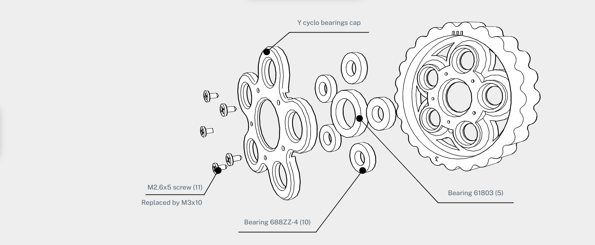
Do:
- Take one Y gearbox cycloidal disk.
- Press 1 x Bearing 61803 into the big centre hole.
- Press 5 x Bearing 688ZZ-4 into the 5 holes around the centre.
- Put the Y cyclo bearings cap (the 5-lobed flat plate) on top.
- Screw the cap down with 5 x screws (labelled M2.6x5; the manual says use M3x10 now).
Hardware: 1x 61803, 5x 688ZZ-4, 5x cap screws. The label "(11)" and "(10)" are CAD numbers, not counts.
Orientation: The cap goes on the side shown in the picture. Its 5 lobes cover the 5 small bearings. Its centre hole lines up with the 61803.
Check: All 6 bearings sit flat. None stands proud of the disk. The cap is pressed fully down with no gap.
Tips:
- Press each bearing in evenly. Put a flat block of wood on it and tap with a mallet. A 22 mm socket also works as a press. (Unexpected Maker)
- Push the cap all the way down. Unexpected Maker's disk bearings were loose because the cap did not press them far enough. That made the gearbox wobble.
- Finish screws by hand. A power driver strips plastic. (Unexpected Maker)
Step 22: check the finished disk
Do:
- Look at the rim. Find the number (here "3") and the tick marks (here 3 ticks, at the top).
- Build the other two disks the same way (steps 21–22 again for disks 1 and 2).
Hardware: for 3 disks in total: 3x 61803, 15x 688ZZ-4, 15x cap screws.
Check: You have 3 disks. Disk 1 has 1 tick. Disk 2 has 2 ticks. Disk 3 has 3 ticks. Each cap has 5 screw heads.
Step 23: stack the disks on the camshaft pieces
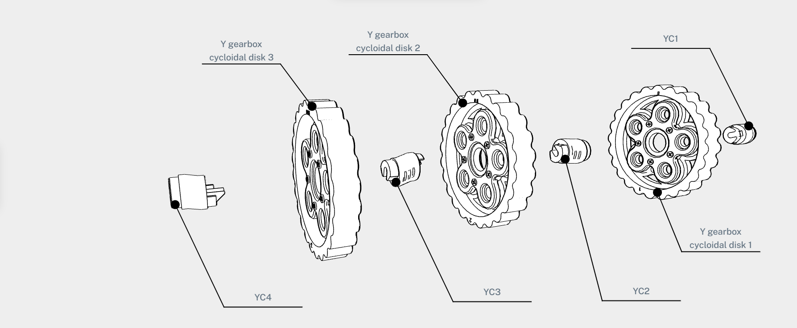
Do (left to right in the picture):
- Start with YC4 (the piece with the forked tab end).
- Slide on Y gearbox cycloidal disk 3.
- Add YC3.
- Slide on disk 2.
- Add YC2.
- Slide on disk 1.
- Finish with YC1 (the piece with the star-shaped end).
Hardware: none.
Orientation: Each camshaft piece keys into the next. Match the tick marks on the pieces as drawn. Keep each disk facing the same way it faces in the picture. (unsure: I could not read the exact tick count on each camshaft piece in the picture.)
Check: After the first cam piece and disk, turn the cam by hand. It must spin. (official 2026 video: add the first camshaft piece, then check that it spins)
Tips:
- "All camshaft parts are marked with notches. Order of assembly is important." (3D manual note)
- If the disks go in back to front, the camshaft ends up on the wrong side. (Unexpected Maker, on Z)
Step 24: lock the disks with one pin
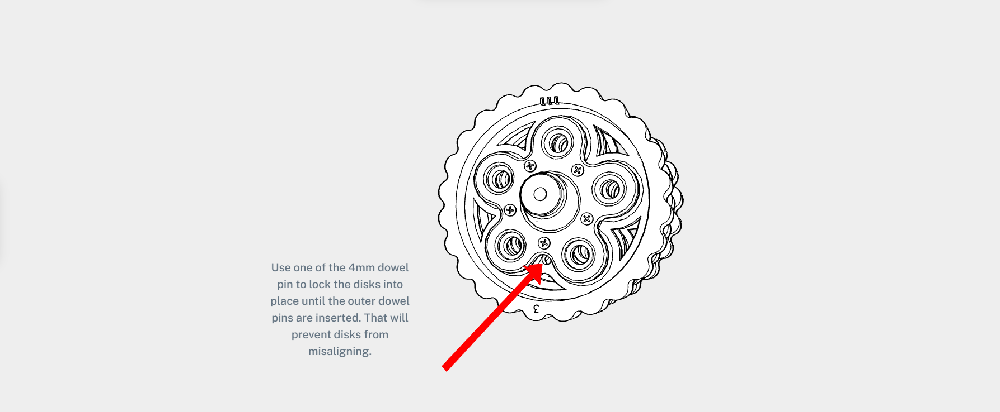
Do:
- Line up the small locking hole in all 3 disks. It sits in the notch between two lobes of the cap (red arrow).
- Push 1 x 4 mm dowel pin through all 3 holes.
Hardware: 1x 4 mm dowel pin. Use one of the 25 Y gearbox pins.
Check: The 3 disks no longer turn against each other. Disk 3 faces you.
Tips:
- The manual says: keep it in "until the outer dowel pins are inserted. That will prevent disks from misaligning."
- You can also push 5 pins through the 5 small bearings to lock the stack. (designer, in Unexpected Maker's stream)
- Don't forget to pull this pin out later. (3D manual note) I suggest you pull it just before the last outer pin goes in at step 26, then use it as that last pin. (unsure: this order is my suggestion, not in the manual.)
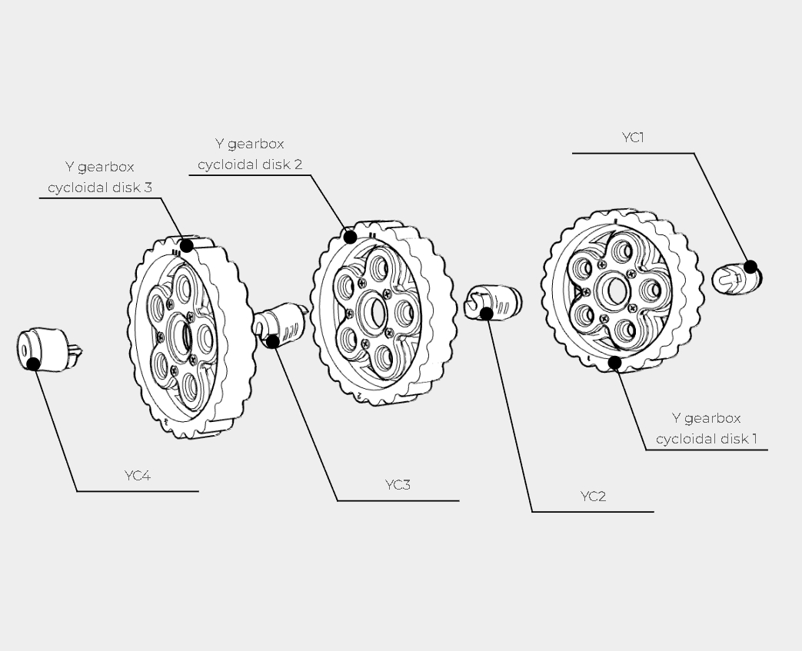
Step 25: put the stack between the covers
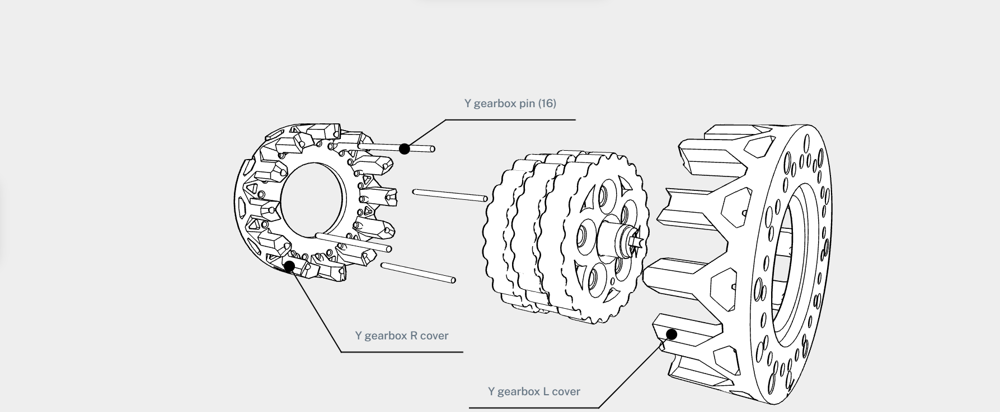
Do:
- Place the disk stack inside the Y gearbox L cover (the big flat ring with fingers, right in the picture).
- Bring the Y gearbox R cover (the ring with short prongs, left) to the other side.
- Push 4 x Y gearbox pin through the R cover holes, past the disk lobes, into the L cover.
Hardware: 4x Y gearbox pin (80 mm). "(16)" is a CAD number.
Orientation: The fingers of the L cover and the prongs of the R cover interlock around the disks. The YC1 star end points out through the L cover side. (unsure: the picture shows the cam end facing the L cover; check that your star end is reachable from the L-cover side, because the Y pulley drives it.)
Check: The two covers close with no gap. The 4 pins slide in with a tight fit.
Tips:
- Line up the dots and small holes on the disks and the covers before you fit the pins and rods. The manual does not say this. (Unexpected Maker)
- The designer said the hardest step is "snap two cases together and align all the pins correctly". (Reddit)
Step 26: push in the rest of the outer pins and the shaft bearings
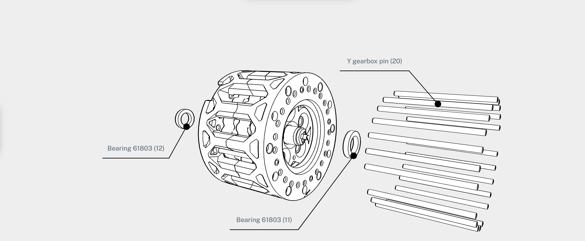
Do:
- Push the rest of the Y gearbox pins into the ring of holes. About 21 more are drawn, for 25 in total.
- Press 1 x Bearing 61803 onto the camshaft end on the R-cover side (left in the picture).
- Press 1 x Bearing 61803 onto the camshaft end on the L-cover side (right in the picture).
Hardware: about 21x Y gearbox pin (could not count exactly; total must be 25), 2x 61803.
Check: All 25 pin holes are filled. Each pin is a tight fit. A loose pin means slop.
Tips:
- "It's easier to insert them when the entire assembly is upside down." (3D manual note)
- Pull the locking pin from step 24 when the other 24 pins are in. Use it as the 25th pin. (unsure: my suggestion)
Step 27: big end bearings and through-bolts
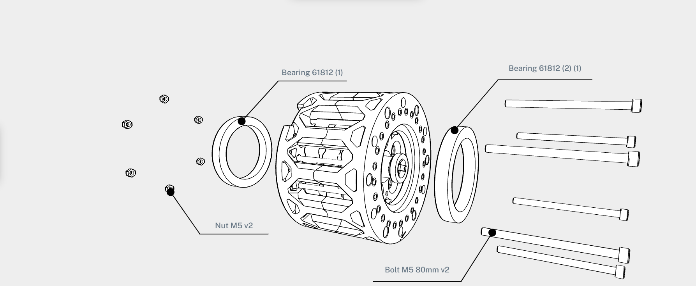
Do:
- Put 1 x Bearing 61812 on the R-cover end (left).
- Put 1 x Bearing 61812 on the L-cover end (right).
- Push 6 x Bolt M5 80mm through the whole gearbox from the L-cover side (right).
- Screw 6 x Nut M5 onto them on the R-cover side (left).
- Tighten them evenly, in a star pattern (opposite bolts in turn).
Hardware: 2x 61812, 6x M5x80, 6x M5 nut.
Check: Both 61812 bearings sit flat and fully seated. The gearbox does not rock when you squeeze it.
Tips:
- The designer said only every second bolt is really needed. (Unexpected Maker stream)
- A nut seized and stripped its plastic pocket in one build. Don't over-tighten. (Unexpected Maker)
Step 28: the finished Y gearbox
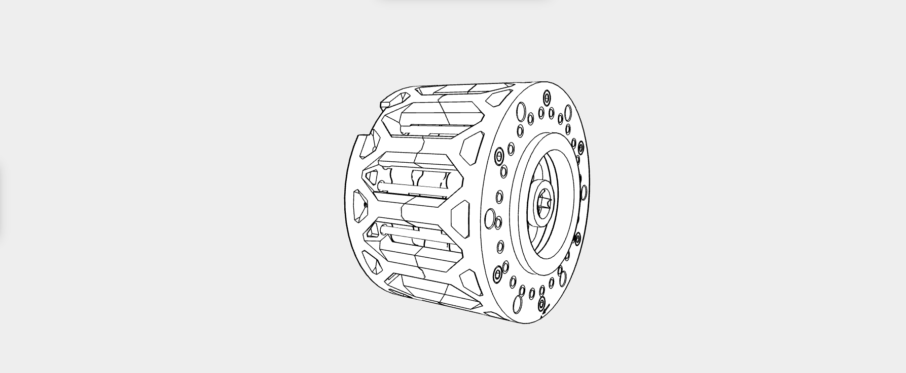
Do:
- Turn the camshaft (the star end in the centre) by hand.
- Hold the gearbox and wiggle the output.
Check: It turns smoothly with no clicking. The outside turns slowly. There is almost no play. If it is tight, see "If something is wrong" at the end.
Step 29: mount it between the Z lower cores
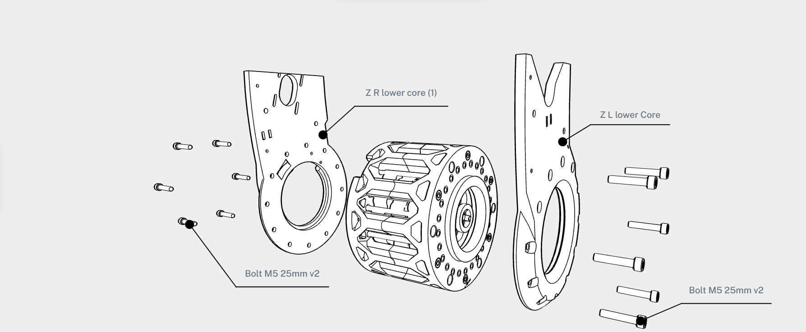
Do:
- Put the Z R lower core (the plate with the oval hole near the top) on the R-cover side (left).
- Put the Z L lower Core (the plate with the V notch at the top) on the L-cover side (right).
- Bolt the Z R lower core on with 6 x Bolt M5 25mm from the outside (left).
- Bolt the Z L lower Core on with 6 x Bolt M5 25mm from the outside (right).
Hardware: 12x M5x25 (6 per side).
Orientation: Both plates point up from the gearbox. The V notch is on the L side. The square cut-out near the hub of the Z R lower core should line up with the matching opening in the gearbox. (official video: "oriented to match the rectangular cable opening")
Check: Both plates are parallel. All 12 bolts are in. The gearbox centre is still free to turn.
Part 2. Y axis (shoulder) (steps 30–50)
Step 30: the bottom of the upper arm
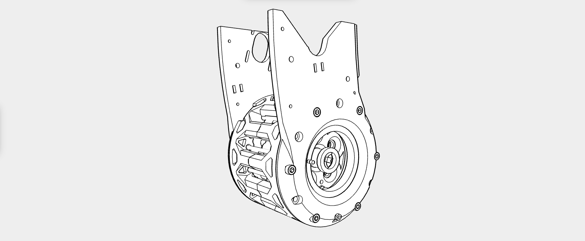
Do:
- Look at the result. This unit is the bottom of the upper arm.
Check: The V-notch plate (Z L lower Core) is in front. The camshaft star end shows in its centre hole.
Step 31: bring in the Y L Core and its bearing
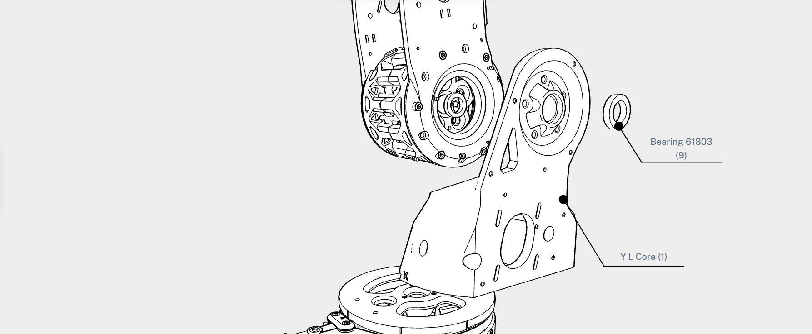
Do:
- Take the Y L Core. It is the shoulder: a tall wall with a round hub, joined to a lower box.
- Press 1 x Bearing 61803 into its round hub from the outside (right in the picture).
- Hold the gearbox unit so its V-notch side faces the inside of the Y L Core wall.
- Line up the gearbox centre with the Y L Core hub.
Hardware: 1x 61803. "(9)" is a CAD number.
Orientation: The "X" mark is on the bottom edge of the Y L Core box. The tall wall with the hub goes on the L side of the gearbox (the V-notch side).
Check: The bearing is flush in the hub. (unsure: the picture does not show the moment the gearbox enters the core. Steps 33–34 show it seated.)
Step 32: fit the Y motor (MKS SERVO57D + Nema 23)
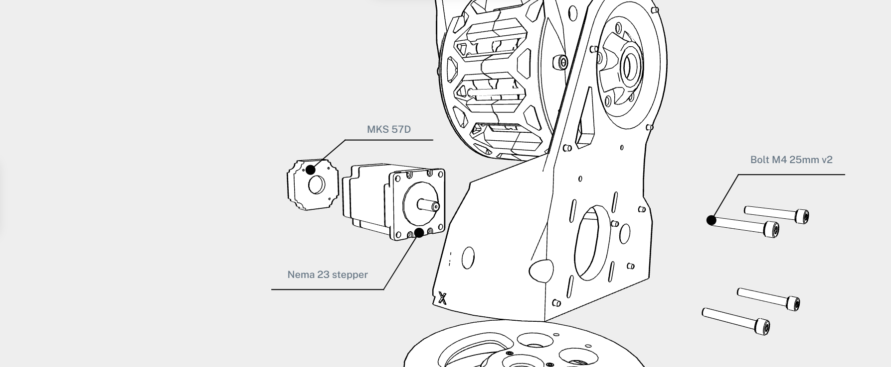
Do:
- Make sure the motor prep box above is done. Driver bolted on, all wires connected, CAN ID 02, calibrated.
- Put the Nema 23 stepper (with the MKS 57D on its back) inside the Y L Core.
- Push its shaft out through the large hole in the tall wall.
- Fix it with 4 x Bolt M4 25mm from the outside of the wall (right).
Hardware: 4x M4x25.
Orientation: The shaft points out through the wall. The MKS 57D faces in, towards the middle of the shoulder.
Check: The shaft sticks out of the wall. The motor sits square.
Tips:
- The designer: mount the motor "in reverse, nuts outside", because inner nuts cannot be reached. (Unexpected Maker stream)
- (unsure: Nema 23 flange holes are often plain holes. The BOM's 10 M4 nuts are all used on the Z rods. If your motor holes are not threaded, you need 4 more M4 nuts.)
Wiring point: Y driver
The MKS 57D is now inside the shoulder.
- Its power and CAN-in cables come up from the X base through the hollow centre of the X pulley. The wiring runs down the centre; no slip ring is needed. (Unexpected Maker)
- Its CAN-out cable goes up to the Z driver. Leave it long and coiled for now.
- Do this before step 35. After step 35 the shoulder is bolted down onto the X pulley, and the centre hole is covered.
- (unsure: whether the 57D terminals can still be reached after step 37. Treat step 35 as the last easy point.)
Step 33: check from the other side
Do:
- Turn the assembly round and look at the far side.
Check:
- The round boss with the ▼Y mark is at the top of the far side.
- The 6 M5 nuts from step 27 are still in place around it.
- The "X" mark is at the bottom corner of the shoulder box.
- "Now we will test if those nuts we put earlier are still there." (official video)
(unsure: no parts are labelled here. I could not tell if the low far wall is part of the Y L Core or a separate part.)
Step 34: the shoulder sits on the base
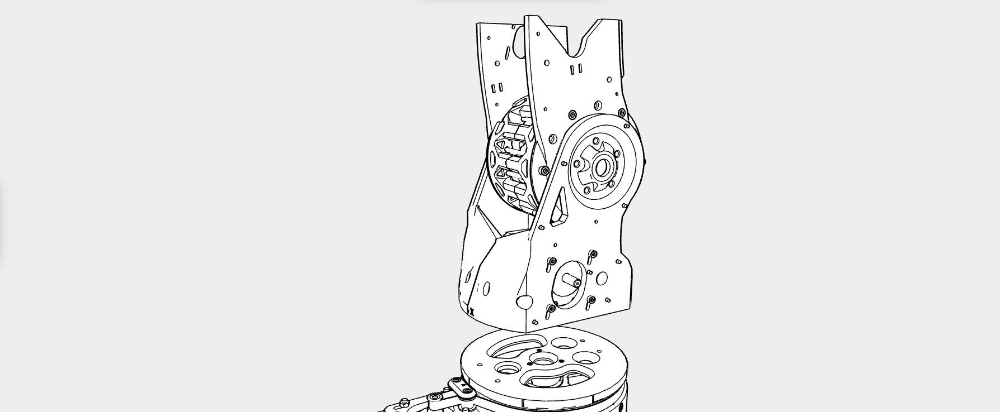
Do:
- Lower the shoulder onto the round X pulley plate of the base.
Check: The motor shaft sticks out of the Y L Core wall. The 4 motor bolts sit in curved slots. The shoulder sits flat on the base.
Step 35: bolt the shoulder to the base
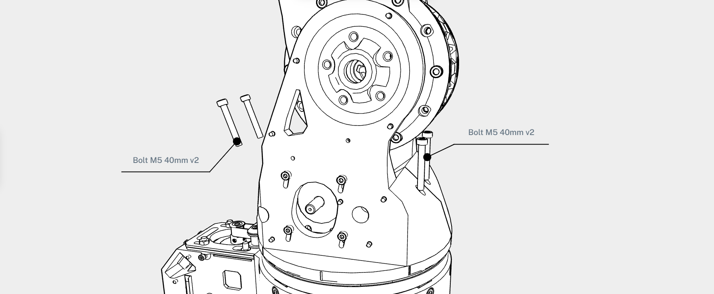
Do:
- Push 2 x Bolt M5 40mm down at an angle on the left side.
- Push 1 x Bolt M5 40mm straight down on the right side.
- Tighten all 3 into the X pulley plate.
Hardware: 3x M5x40.
Check: The shoulder does not move on the base.
Tips: These bolts are hard to reach. Pre-drill (open up) the holes first. (Unexpected Maker)
Step 36: result
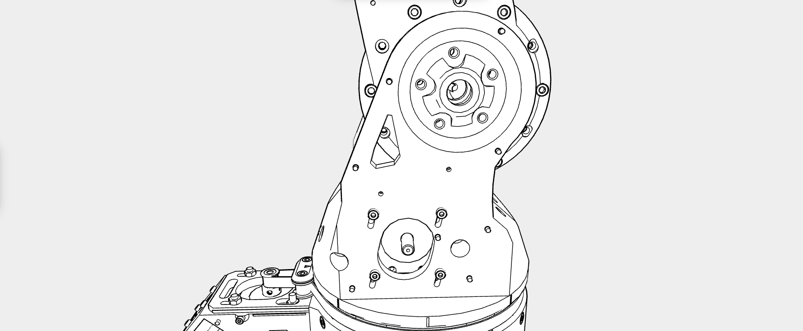
Check: The 3 bolts are in. The motor shaft still sticks out of the wall.
Step 37: the two long M8 bolts
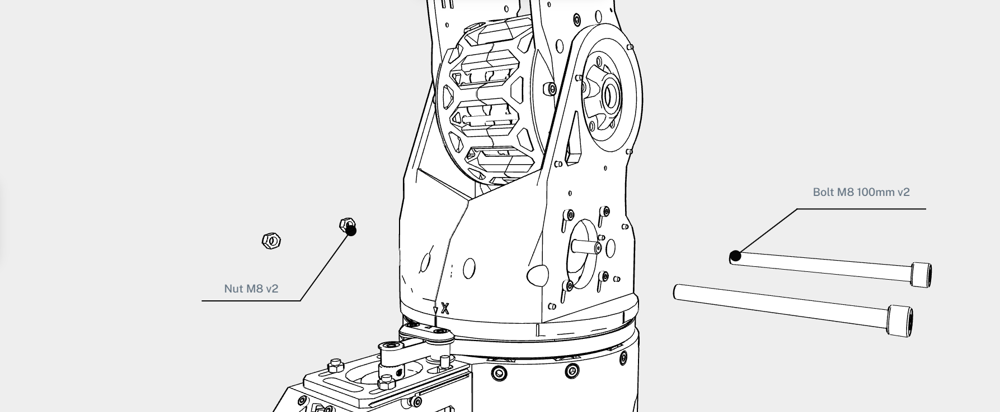
Do:
- Push 2 x Bolt M8 100mm through the lower shoulder box from the right side.
- Screw 2 x Nut M8 onto them on the left side.
Hardware: 2x M8x100, 2x M8 nut.
Check: Both bolts pass all the way through. The nuts are tight.
Step 38: result
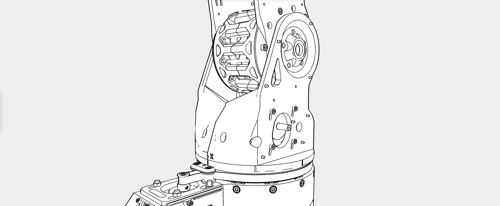
Check: The shoulder is firm on the base.
Step 39: the 5 inner rods (M5)
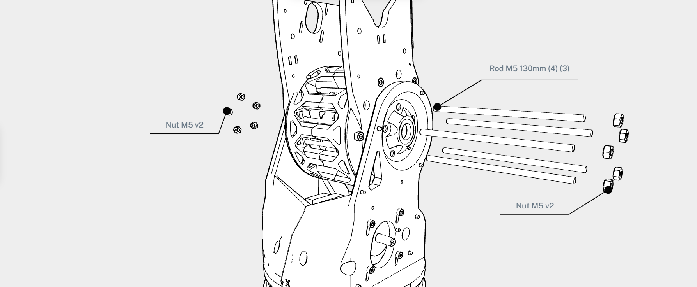
Do:
- Push 5 x Rod M5 130mm through the 5 holes around the Y L Core hub, from the outside (right).
- Push each rod through the gearbox and out of the far side.
- Screw 1 x Nut M5 onto each rod end on the far side (5 nuts).
- Screw 1 x Nut M5 onto each rod end on the near side (5 nuts).
Hardware: 5x M5x130 rod, 10x M5 nut. "(4) (3)" are CAD numbers.
Check:
- The last rod should meet some resistance when you push it in. That shows the gearbox is assembled correctly. (official docs)
- Every nut is tight. One loose rod nut caused a clicking noise. (Unexpected Maker)
Tips:
- Use the M5 rods here, not the M4 ones. (designer)
- Tightening the rod nuts brought some backlash back on Z. Lock nuts did not fit because the rods are too short. Many builders use M5x100 bolts instead of double-nutted rod. (Unexpected Maker)
Step 40: result
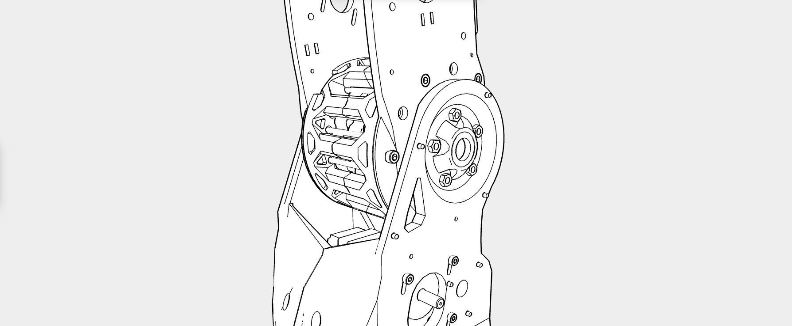
Check: 5 nuts sit around the hub on this side.
Step 41: Y pulley, centre rod and belt
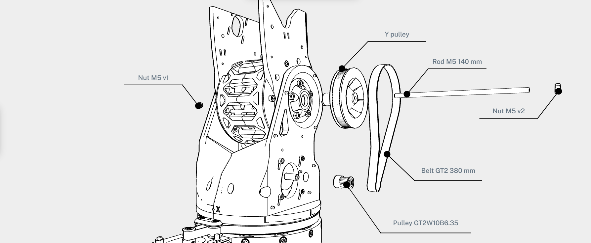
Calibrate the Y driver now if you have not.
The belt goes on in this step. Calibration needs the motor free. (Makerbase manual)
Do:
- Push the Y pulley onto the camshaft through the Y L Core hub. Its key must engage the camshaft star.
- Push 1 x Rod M5 140 mm through the centre of the Y pulley and the whole gearbox.
- Screw Nut M5 v1 onto the far end (left).
- Screw Nut M5 v2 onto the near end, outside the pulley (right).
- Put Pulley GT2W10B6.35 on the motor shaft. Leave the set screw loose for now.
- Loop Belt GT2 380 mm around the Y pulley and the motor pulley.
Hardware: 1x M5x140 rod, 2x M5 nut, 1x GT2 W10 B6.35 pulley, 1x 380 mm belt.
Check: The Y pulley sits fully on the camshaft. The belt runs straight.
Tips:
- "Pulley not engaging the camshaft, push it more." A washer fixed it, and then there was no backlash. (designer, in Unexpected Maker's stream)
- The centre rod should stick out of the pulley by about 5 mm, with a nut on the other side. (designer)
- Do not over-tighten the motor pulley set screw yet. You slide it later to line up with the belt. (official video)
- The Y belt is 380 mm. The 630 mm belt is for X. (designer)
- If a bolt head rubs the belt, turn that bolt round. (Unexpected Maker)
Step 42: result
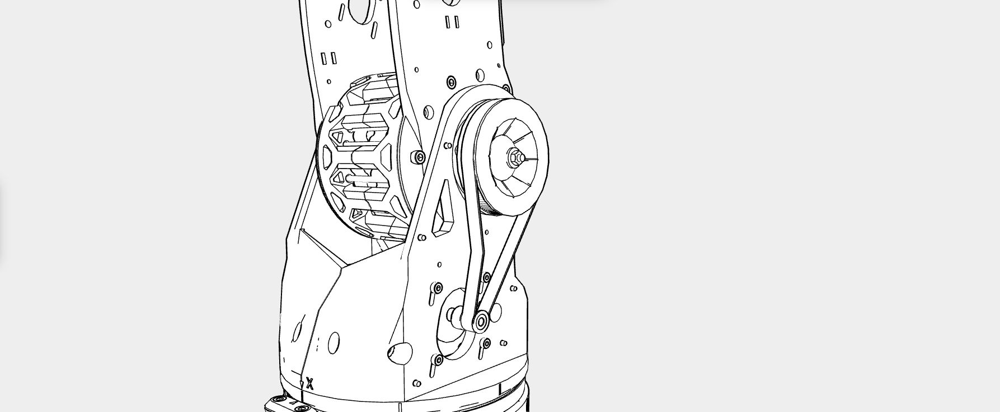
Check: The belt goes from the small motor pulley up to the big Y pulley.
Step 43: the Y belt tensioner
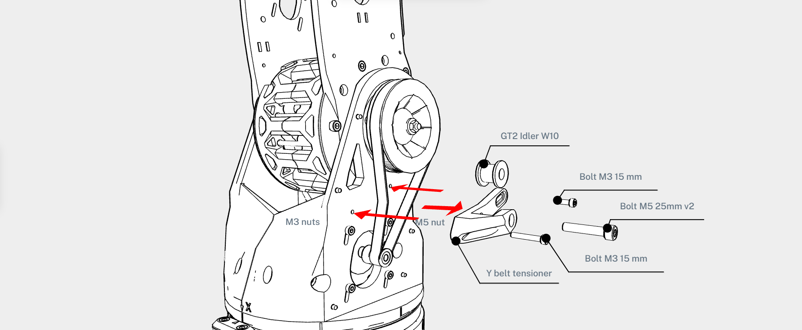
Do:
- Put the M5 nut in the back of the Y belt tensioner (red arrow "M5 nut").
- Fix the GT2 Idler W10 to the tensioner with 1 x Bolt M5 25mm.
- Put 2 x M3 nuts behind the Y L Core wall at the two holes (red arrows "M3 nuts").
- Fix the tensioner to the wall with 2 x Bolt M3 15 mm through its slots.
- Leave the M3 bolts slightly loose.
Hardware: 1x GT2 Idler W10, 1x M5x25, 1x M5 nut, 2x M3x15, 2x M3 nut.
Check: The tensioner slides in its slots.
Tip: The idler should spin freely. On X, the idlers clamped and needed washers. Chat said idlers are meant to float. (Unexpected Maker)
Step 44: tension the Y belt
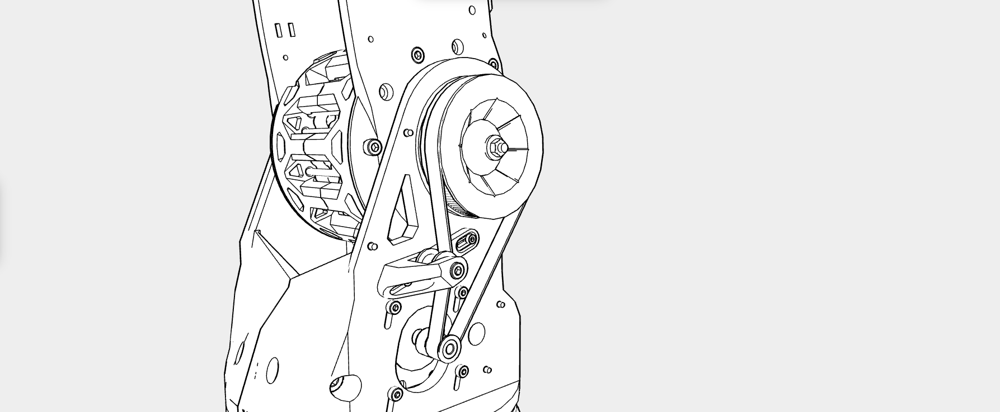
Do:
- Slide the tensioner so the idler presses on the belt.
- Tighten the 2 M3 bolts.
- Slide the motor pulley along its shaft until the belt runs straight.
- Tighten the pulley set screw.
Check: The belt is tight. It does not skip when you turn the Y pulley by hand.
Step 45: the Y cable holder and its magnets
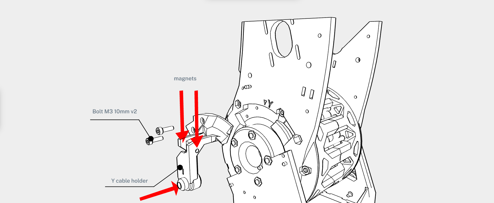
Do:
- Put magnets in the Y cable holder where the 3 red arrows point: 2 in the top, 1 in the round end at the bottom.
- Fit the holder to the far-side boss, next to the ▼Y mark.
- Fix it with 2 x Bolt M3 10mm v2.
Hardware: 2x M3x10, magnets (3x3 mm). (unsure: how many magnets go in each spot.)
Check: The holder sits next to the ▼Y mark. The magnets are flush.
Tips:
- These magnets trigger the Y limit sensor. Hall sensors are polarised. Unexpected Maker glued magnets in with the wrong polarity and had to reprint.
- A dual Hall module (WSH231) needs one N magnet and one S magnet. (Unexpected Maker)
- Test each magnet with the sensor before you glue it.
Step 46: result
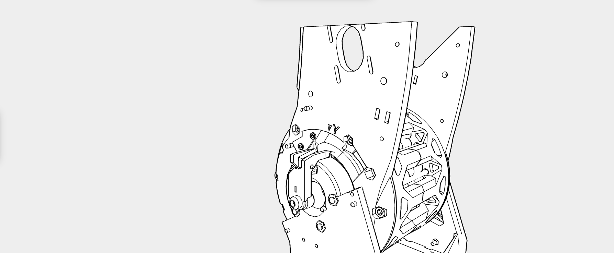
Check: The Y cable holder is fixed next to the ▼Y mark.
Step 47: the upper-arm plates
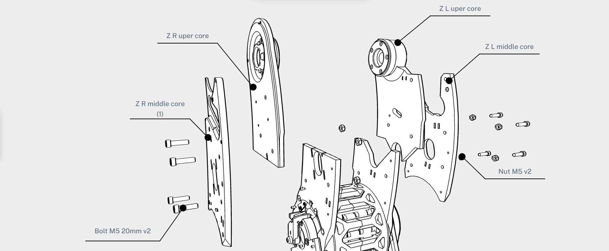
Do:
- On the ▼Y side (left), put the Z R uper core above the Z R lower core.
- Lay the Z R middle core (1) over the joint, on the outside.
- Fix it with 4 x Bolt M5 20mm v2 from the outside.
- On the other side (right), put the Z L uper core above the Z L lower Core.
- Lay the Z L middle core over the joint, on the outside.
- Fix it with 4 x Bolt M5 20mm v2 and Nut M5 v2.
Hardware: 8x M5x20 (4 per side). 4x M5 nut drawn (3 near the right-side bolts, 1 near the centre). (unsure: exactly which holes take the nuts, and whether the left side needs nuts.)
Orientation: The round hubs of both upper cores point up. They face each other.
Check: Both sides are straight and the same height. The hubs line up.
Step 48: bearings in the upper hubs
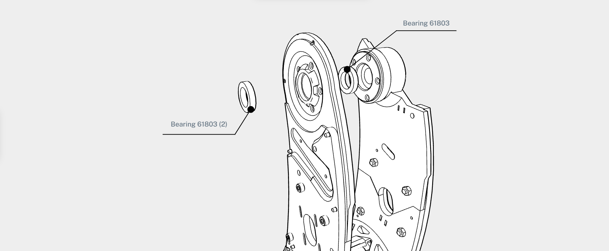
Do:
- Press 1 x Bearing 61803 into the hub of the Z R uper core.
- Press 1 x Bearing 61803 into the hub of the Z L uper core.
Hardware: 2x 61803. "(2)" is a CAD number.
Orientation: In the picture both bearings go in from the left. That is the outer face of the Z R uper core and the inner face of the Z L uper core. (unsure: check against your parts; the seat recess shows the side.)
Check: Both bearings are flush and straight.
Step 49: fit the Z motor (MKS SERVO42D + Nema 17 60 mm)
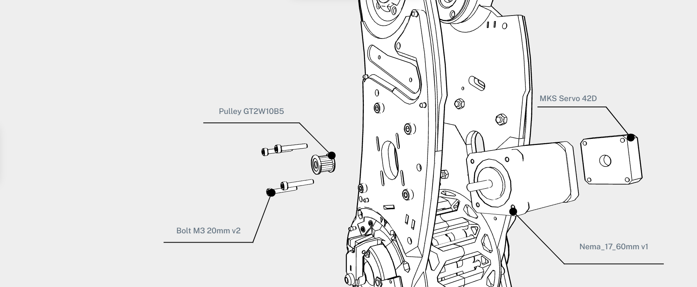
Do:
- Make sure the motor prep box above is done. Driver on, all wires on, CAN ID 03, remap done, calibrated.
- Put the Nema_17_60mm (with the MKS Servo 42D on its back) between the upper-arm plates.
- Push its shaft out through the Z R middle core (left).
- Fix it with 4 x Bolt M3 20mm v2 from the outside (left).
- Put Pulley GT2W10B5 on the shaft, outside the plate. Leave the set screw loose.
Hardware: 4x M3x20, 1x GT2 W10 B5 pulley.
Orientation: The shaft points out to the ▼Y side. The 42D faces the other plate.
Check: The pulley is outside the plate. The motor sits in the 4 short slots.
Wiring point: Z driver
- Run the Y-to-Z cable (power + CAN) from the Y driver, across the Y joint, up between the upper-arm plates to the 42D. (unsure: the manual shows no cable path in these steps. The Y cable holder (step 45) is the likely place where cables cross the Y joint.)
- Fit the Z limit sensor wires to the 42D now, or leave a labelled pigtail. Unexpected Maker: "You can't assemble the robot and then go back and add all the limits and wiring."
- Run a cable from the 42D on towards the elbow for the A motor (CAN-out + power). It crosses the Z joint at steps 73–74.
- One builder broke stepper leads when parts pressed on the wires. The MKS terminals face sideways. Keep wires clear of plate edges. (Unexpected Maker)
Step 50: result
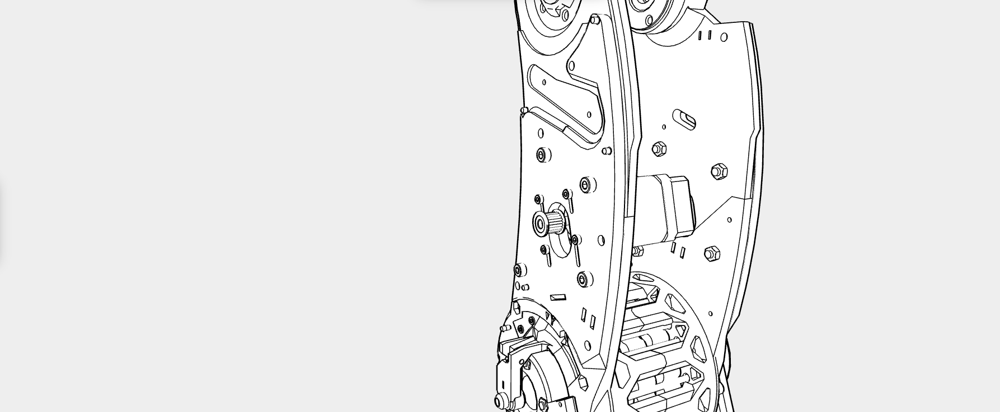
Check: The Z motor sits between the plates. Its pulley is outside the plate.
Part 3. Z cycloidal gearbox (steps 51–58)
The Z gearbox is built like the Y one but smaller. It uses 50 mm pins, M3x50 bolts, 61810 bearings and M4 rods. "Follow the parts labelling and order of assembly." (official video)
Step 51: build three Z disks and line up the locking holes
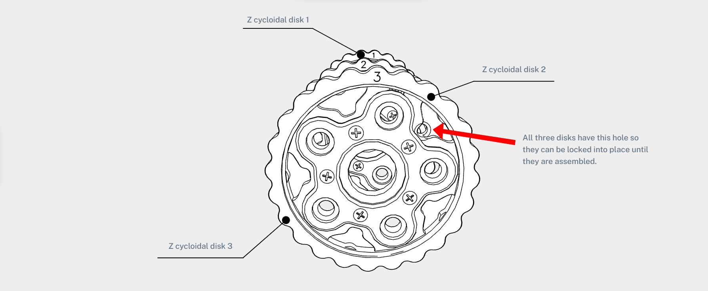
Do:
- Build 3 Z disks as in step 21. Each gets 1 x 61803, 5 small bearings and a cap with 5 screws.
- Find the number on each rim: Z cycloidal disk 1, 2 and 3.
- Find the small locking hole on each disk (red arrow). It is near the rim, between two lobes.
- Stack the disks with disk 3 in front. Line up the 3 locking holes.
Hardware: for 3 disks: 3x 61803, 15x small bearings (type: see the conflict note), 15x cap screws.
Check: You can see 1, 2 and 3 on the rims, stepped like the picture.
Tips:
- The designer enlarged this hole to about 1.8 mm so a piece of filament can pin the stack. (Unexpected Maker stream)
- Unexpected Maker also drilled about 1.8 mm alignment holes and used filament or a drill bit.
Step 52: stack the disks on the camshaft pieces
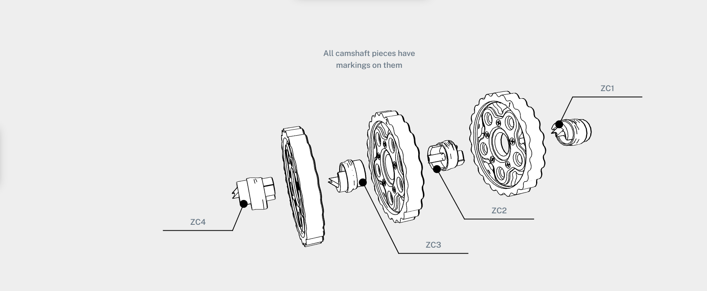
Do (left to right in the picture):
- Start with ZC4.
- Slide on the first disk.
- Add ZC3.
- Slide on the second disk.
- Add ZC2.
- Slide on the third disk.
- Finish with ZC1.
Hardware: none.
Orientation: "All camshaft pieces have markings on them." Match the marks as drawn. (unsure: the disks are not numbered in this picture. Step 53 shows disk 3 on the outside. By the Y pattern, disk 3 sits next to ZC4. Check your numbers against step 53.)
Check: It spins by hand after each stage.
Tips:
- Cam 1 and cam 3 look alike. Check the marks. A bearing went in the wrong place for Unexpected Maker here.
- The flat side of the cam stack faces the motor. (Unexpected Maker)
- Lock the disks: put 5 dowel pins through the 5 small bearings during assembly. (designer)
Step 53: check the stack
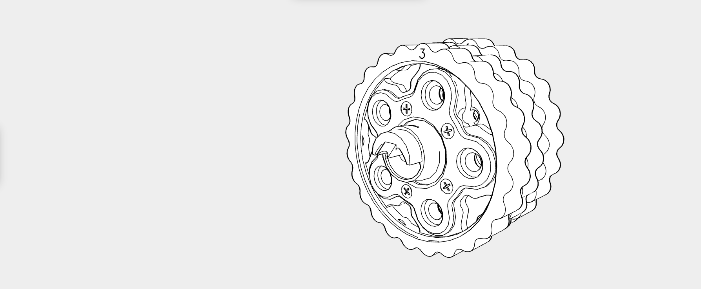
Check: Disk "3" is on the outside, facing you. The camshaft end shows in the centre. 5 cap screws are on disk 3.
Tip: If the disks went in back to front, the camshaft is on the wrong side. To fix it, remove only the outer bolts and flip the inner stack. (Unexpected Maker)
Step 54: put the stack into the left cover
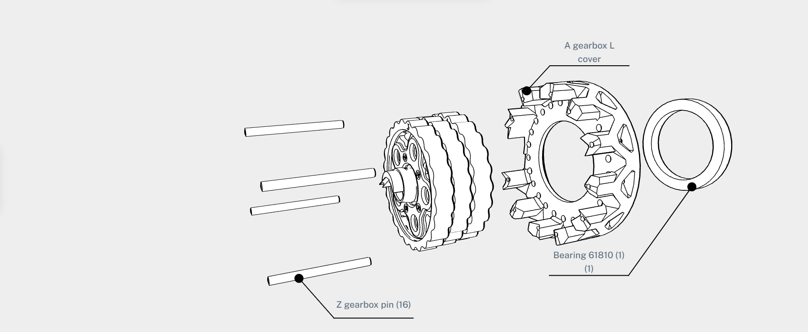
Do:
- Put 1 x Bearing 61810 on the outer side of the A gearbox L cover (right in the picture). This is the Z left cover; the name is old.
- Put the disk stack into the open side of the cover, disk 3 facing out (left).
- Push 4 x Z gearbox pin through the disk lobes into the cover.
Hardware: 1x 61810, 4x Z gearbox pin (50 mm). "(16)" and "(1)" are CAD numbers.
Orientation: The bearing goes on the side away from the disks. The cover's fingers wrap around the disks.
Check: The 4 pins are tight in their holes. The bearing is fully seated.
Tip: One builder found the big bearing not fully seated. He pressed it on with a second bearing. (Unexpected Maker)
Step 55: check the stack in the cover
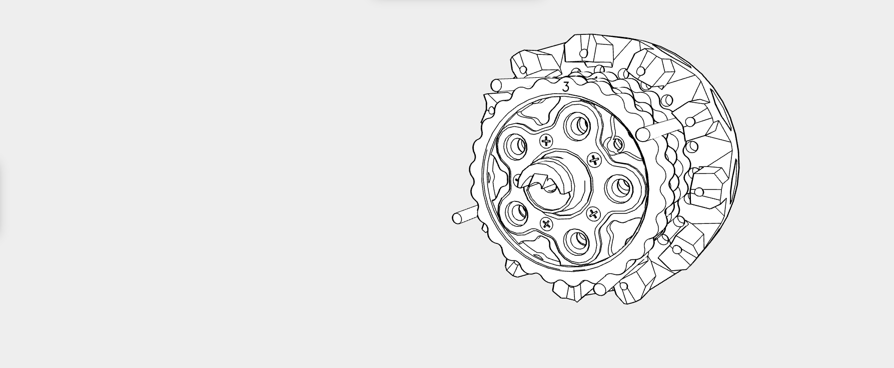
Do:
- Look at the result before you close the gearbox.
Check:
- Disk 3 faces you with its number at the top.
- 4 pins are in, spread round the ring.
- The cover fingers wrap the disks evenly.
- The camshaft end shows in the centre.
- Turn the camshaft by hand. It should turn. (official video: check that it spins)
Step 56: close it with the ZR cover
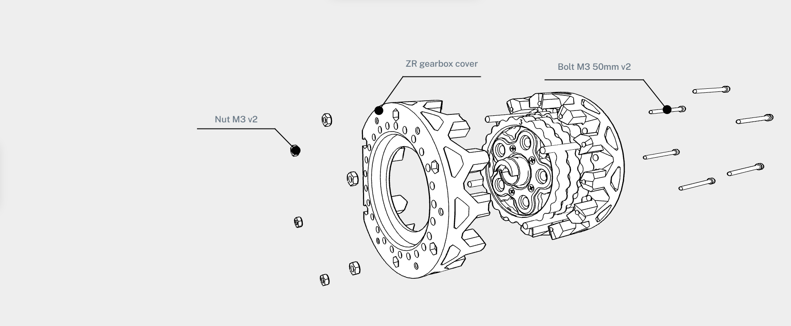
Do:
- Put the ZR gearbox cover on the disk-3 side (left).
- Push 6 x Bolt M3 50mm v2 through both covers from the L-cover side (right).
- Screw 6 x Nut M3 v2 onto them on the ZR-cover side (left).
- Tighten evenly, opposite bolts in turn.
Hardware: 6x M3x50, 6x M3 nut.
Check: The two covers meet with no gap. Nothing rocks.
Tip: The cover nuts are M3, not M4. (Unexpected Maker)
Step 57: the rest of the outer pins and the shaft bearing
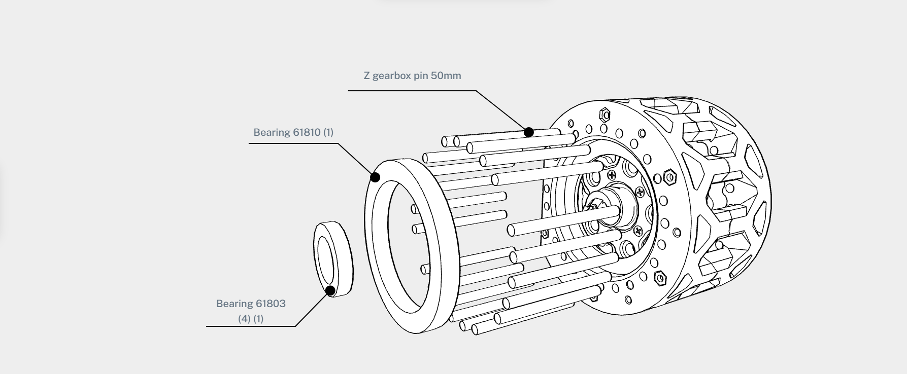
Do:
- From the ZR-cover side, push the rest of the Z gearbox pin 50mm pins into the ring of holes. About 21 more are drawn, for 25 in total.
- Put 1 x Bearing 61810 on the ZR-cover side.
- Press 1 x Bearing 61803 onto the camshaft end, in the centre.
- Pull the locking pin or filament out of the disks.
Hardware: about 21x Z gearbox pin (could not count exactly; total must be 25), 1x 61810, 1x 61803. "(4) (1)" are CAD numbers.
Check: All 25 pins are in and tight. Both 61810 bearings are seated.
Tips:
- Order that worked for Unexpected Maker: camshaft rod first, then the 5 centre pins, then the outer pins.
- Pins must be a tight fit. (Unexpected Maker)
- Look for support material left in a cover corner. It tilted his gearbox. (Unexpected Maker)
Step 58: ready to mount
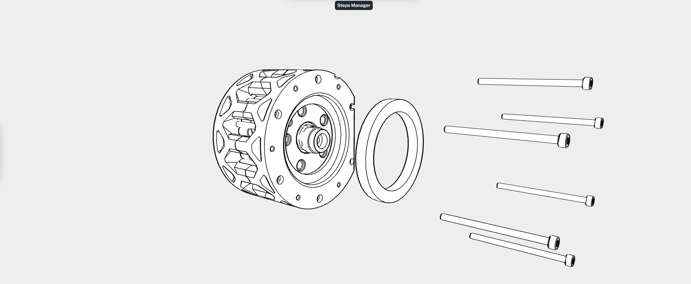
Do:
- Check the L-cover side: the 61810 from step 54 is on, and the 6 bolt heads are in.
Hardware: none new. (unsure: there are no labels here. The 6 long, thin bolts look like the same M3x50 bolts from step 56, seen from the L side. The ring looks like the step-54 61810. The old caption guessed M5 bolts; the pictures do not support that.)
Check: Turn the camshaft by hand. It turns smoothly with no clicking. The housing turns slowly.
Part 4. Z axis (elbow) (steps 59–74)
Step 59: join the two elbow cores
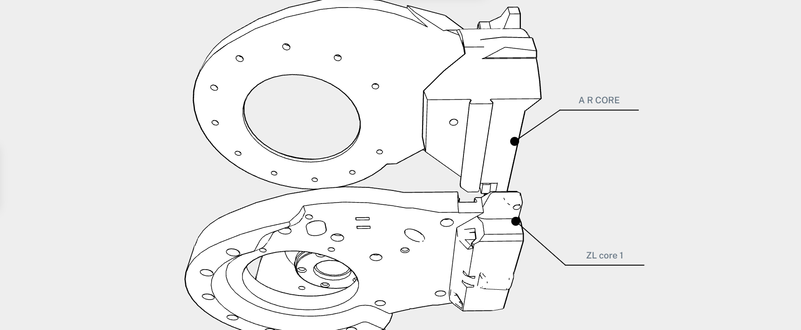
Do:
- Take the A R CORE (round plate with a big hole, top) and ZL core 1 (round plate with a bearing seat, bottom).
- Slot their square ends together at the corner.
Hardware: none.
Orientation: The two round plates face each other, with a gap between them for the gearbox.
Check: The square ends fit fully together with no step.
Step 60: bolt the elbow cores together
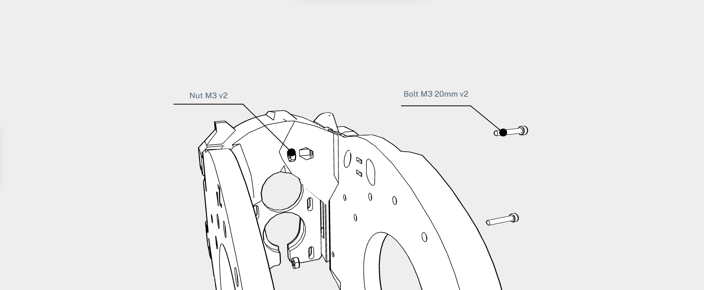
Do:
- Put 2 x Nut M3 v2 into the nut pockets: 1 at the top, 1 at the bottom.
- Push 2 x Bolt M3 20mm v2 in from the outside (right).
- Tighten them into the nuts.
Hardware: 2x M3x20, 2x M3 nut.
Check: The joint does not flex.
Step 61: bring the Z gearbox to the elbow
Do:
- Hold the Z gearbox with the ZR-cover side (the nut side) facing you.
- Find the ▼Z mark on the elbow plate.
- Lower the gearbox into the elbow, between the two round plates.
Orientation: The ▼Z mark points to the top of the joint. (unsure: which edge of the gearbox lines up with ▼Z; match the bolt holes.)
Check: The bolt holes in the plates line up with holes in the gearbox covers.
Step 62: bolt the gearbox into the elbow
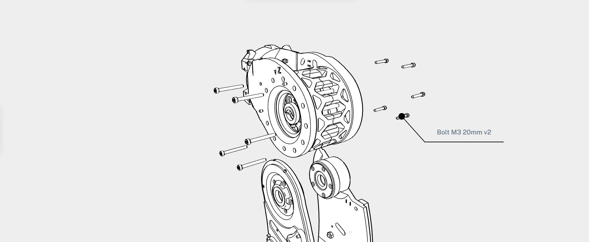
Do:
- Push 5 x long bolts through the front plate (the ▼Z plate) into the gearbox.
- Push 5 x Bolt M3 20mm v2 in from the back.
- Tighten all 10 in turn.
Hardware: 5x long bolts (unsure: not labelled; about twice as long as the M3x20 in the picture), 5x M3x20. The old caption said 6 short bolts; the picture shows 5.
Check: The gearbox is firmly held. The centre still turns.
Step 63: open the upper arm
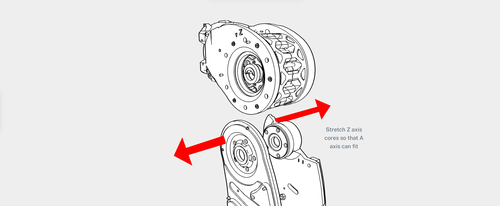
Do:
- Gently pull the two upper-arm plates apart (red arrows). "Stretch Z axis cores so that A axis can fit."
- Hold them apart.
Check: The gap is wide enough for the elbow. Don't bend so far that a plate cracks.
Step 64: put the elbow in and fit the 5 inner rods (M4)
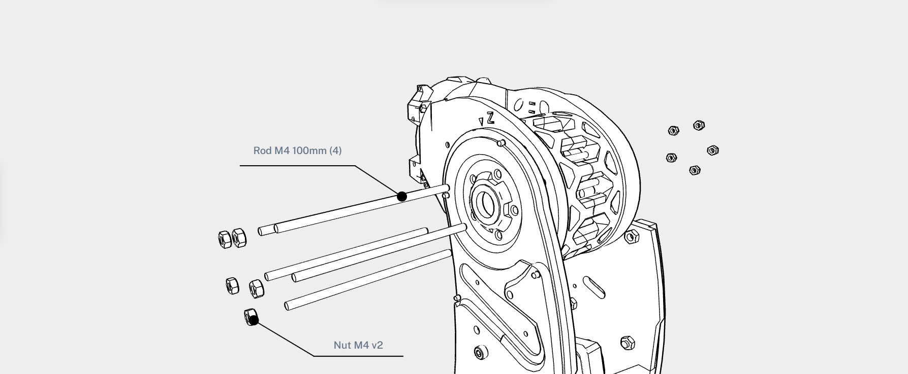
Do:
- Slide the elbow between the upper-arm plates. Line the gearbox up with the two hubs.
- Let the plates spring back.
- Push 5 x Rod M4 100mm through the 5 holes around the near hub (left in the picture).
- Push each rod through the gearbox and out of the far hub.
- Screw 1 x Nut M4 v2 on each rod end on the far side (5 nuts).
- Screw 1 x Nut M4 v2 on each rod end on the near side (5 nuts).
Hardware: 5x M4x100 rod, 10x M4 nut. "(4)" is a CAD number.
Check:
- The last rod meets some resistance. That shows correct assembly. (official docs)
- All 10 nuts are tight.
Tips:
- The M4 rods were missing from the old slides. Insert them from the left side, because they thread into nuts on the right. (Unexpected Maker)
- Use the M4 rods here, not the M5 ones.
- Many builders use M4x100 bolts instead of rod. Unexpected Maker called it the "best thing I ever did".
Step 65: result
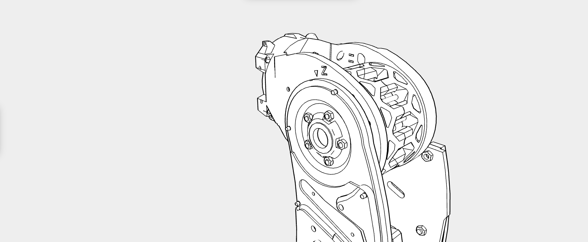
Check: 5 nuts sit round the near hub. The ▼Z mark is on top. The camshaft end shows in the centre.
Step 66: the Z pulley
Do:
- Push the Z pulley onto the camshaft through the near hub. Its key must engage the camshaft end.
Check: The pulley sits fully home. It does not rock.
Tip: If it does not engage, push it further on. A washer fixed this on Y. (designer)
Step 67: the Z centre rod
Calibrate the Z driver now if you have not.
The belt goes on in step 69. Calibration needs the motor free.
Do:
- Push 1 x Rod M5 100mm through the centre of the Z pulley and the gearbox.
- Screw 1 x Nut M5 v2 on the far end.
- Screw Nut M5 v2 onto the near end, outside the pulley. 2 nuts are drawn on this side.
Hardware: 1x M5x100 rod, 3x M5 nut drawn. (unsure: step 68 shows only 1 nut on the pulley face. The second near-side nut may be a lock nut.)
Check: The rod sticks out at both ends. The pulley is held tight.
Tip: The rod "isn't quite long enough" for a nut each end. Use an M5 bolt 100 mm long (not counting the head), or longer rod. (Unexpected Maker)
Step 68: result
Check: One nut sits on the pulley face. The rod end shows.
Step 69: the Z belt
Do:
- Loop GT2 W10 450 mm around the big Z pulley.
- Loop it down around the small motor pulley on the upper arm.
Hardware: 1x 450 mm belt.
Check: The belt runs straight, not twisted.
Step 70: the Z belt tensioner
Do:
- Put the Nut M5 v2 at the back of the Z belt tensioner.
- Fix the GT2 idler W10 to the tensioner with 1 x Bolt M5 25mm v2.
- Put 2 x Nut M3 v2 behind the arm plate.
- Fix the tensioner to the plate with 2 x Bolt M3 20mm v2 through its slots.
- Leave the M3 bolts slightly loose.
Hardware: 1x GT2 idler W10, 1x M5x25, 1x M5 nut, 2x M3x20, 2x M3 nut.
Check: The tensioner slides in its slots.
Tips:
- M3x20 is the limit before the screws hit the gearbox. M3x15 also works. (designer, via Unexpected Maker)
- The idler bolt is M5x25. One kit did not include it. (Unexpected Maker)
Step 71: tension the Z belt
Do:
- Push the tensioner so the idler presses on the belt (red arrow).
- "Tighten the belt, then tighten the bolts to secure the tensioner."
- Slide the motor pulley until the belt runs straight. Tighten its set screw.
Check: The belt is tight. It does not skip when you turn the Z pulley by hand.
Step 72: result
Check: The tensioner is locked. The belt is tight.
Step 73: the Z cable holder and its magnets
Do:
- Put magnets in the Z cable holder where the 3 red arrows point: 2 in the top, 1 in the round end at the bottom.
- Fit the holder to the far side of the elbow, by the hub with the M4 nuts.
- Fix it with 3 x Bolt M3 10mm v2.
Hardware: 3x M3x10, magnets (3x3 mm). (unsure: how many magnets in each spot.)
Check: The magnets are flush and test correctly with the sensor.
Tip: Same polarity warning as step 45.
Wiring point: Z joint crossing
The cable from the Z driver to the A driver crosses the Z joint here.
- Lay it now, before step 74.
- "The ZL cover routes wires through itself." (Unexpected Maker)
- The A motor goes in at step 75. Its driver must be wired before it goes in. (docs: "Once mounted, there's no space to add wires on A, B, and C axes")
Step 74: the ZL cover core
Do:
- Check that every wire passing the elbow is in place.
- Fit the ZL cover core over the side of the elbow.
- Fix it with 4 x Bolt M3 10mm v2.
Hardware: 4x M3x10.
Check: No wire is pinched under the cover. The elbow turns through its range by hand without pulling a wire tight.
Final checks for both gearboxes
Don't take it apart more than you must
Every rebuild wears the printed parts. One rebuilt cycloidal had "way too much backlash". (Unexpected Maker)
Don't use thread-lock until you are sure you won't open it again.
If something is wrong
- Lots of slop: the pins are undersized, or the disk bearings are loose. Measure the pins. Push the caps down. (Unexpected Maker)
- Tight or won't turn: disks in the wrong order or direction, support material inside, or a bearing not seated straight. Oversized parts jam. Try printing at 99% scale, or run it in with a drill. (docs)
- Wobble: support material in a cover, or a bearing cap not pressed down. (Unexpected Maker)
- Clicking: a loose rod nut, or a broken bearing. (Unexpected Maker)
- Backlash came back after tightening the rod nuts: the rods are too short for lock nuts. Use M4x100 / M5x100 bolts instead. (Unexpected Maker)
- Stops at the same angle every time: a mechanical fault. Open the gearbox. (mdion2)
Wrist B and C
Back to Arctos Robot Arm · Build order: Closed Loop Build Manual · Shared rules: Planetary Gearboxes (A, B, C) · Previous: A Axis and Gearbox
This guide covers manual steps 101–145 (B and C axes) and 204–209 (C limit switch). It is for the closed-loop build (MKS SERVO42D drivers on CAN bus).
How to read it
- Every step has numbered actions, a Check: line, and tips.
- Part names are copied from the manual pictures.
- Hardware counts are what I counted in the pictures. "Drawn: N" means N items are drawn in that picture.
- Numbers in brackets in the pictures, like "Bearing 61803 (7)", are CAD instance numbers. They are not quantities.
- "(unsure: …)" marks something I could not confirm.
- Source tags: [Manual] = static picture manual v0.2.9 beta. [3D] = the newer 3D viewer manual. [Docs] = arctosrobotics.com/docs. [BOM] = the bill of materials. [Alberto] = Alberto Rivera, "BC planetary gearbox assembly" video. [UM] = Unexpected Maker build streams.
The one rule for this whole section: wire as you build
"Connect all wires to MKS drivers BEFORE bolting down the motors. Once mounted, there's no space to add wires on A, B, and C axes." [Docs]
Unexpected Maker: "You can't assemble the robot and then go back and add all the limits and wiring." [UM]
Look for the 🔌 WIRE NOW boxes below. Do each one before you go past it.
1. Words you need
- Planetary gearbox: a sun gear in the middle, planet gears around it, and a ring gear (teeth on the inside) around them.
- Compound: each planet is a stack of 3 gears (input, middle, output) bolted together. Each layer has a different tooth count. That gives a big ratio in a small box. The B and C boxes are 67.82 : 1 each. [Docs]
- Herringbone / helical gear: teeth cut at an angle (helical) or in a V shape (herringbone). The wrist gears are handed: left and right have opposite tooth angles. [UM]
- Bevel gear: a cone-shaped gear. Two bevel gears can mesh at 90°.
- Differential: three bevel gears that let two motors make two different motions (see section 3).
- Idler: a smooth wheel that presses on a belt to keep it tight.
- Hall sensor / endstop (KY003, KYD003, WSH231): a small board that sees a magnet. It tells the driver "you are at the end". There is no click switch.
- CAN bus: the two-wire network (CAN H and CAN L) that links all MKS drivers in a chain.
- BL / BR: the left and right wrist side plates ("B left core", "B right core").
2. Complete hardware tally for B + C
I counted the BL (left) side in the pictures. The manual says "BR core assembles the same way as BL core". So I doubled the side parts.
2.1 Bearings
| Bearing |
Where |
Per side |
Centre |
Total B+C |
BOM total (whole arm) |
| 61803 (26x17x5) |
BL/BR motor holder (step 107) |
1 |
– |
2 |
22 |
| 61803 |
BL/BR core, under the timing pulley (step 117) |
1 |
– |
2 |
|
| 61803 |
B core, one each side (step 101) |
– |
2 |
2 |
|
| 61803 |
C bevel gear shaft (step 142) |
– |
1 |
1 |
|
| 61803 total |
|
|
|
7 |
|
| 61812 (78x60x10) |
under the outer ring (step 125) |
1 |
– |
2 |
5 (Y 2 + A 1 + BC 2 = 5, agrees) |
The gripper's Bearing 61810 (step 210) is not in this section.
2.2 Gears, belts, pulleys (per side, times 2)
| Part |
Per side |
Total |
Notes |
| BCG middle planetary |
4 |
8 |
step 118 |
| BCG input planetary |
4 |
8 |
step 121 |
| BCG output planetary |
4 |
8 |
step 126 |
| BCG input sun |
1 |
2 |
step 120 |
| BCG output sun |
1 |
2 |
step 124 |
| BCGL / BCGR outer ring (pulley teeth outside, gear teeth inside) |
1 |
2 |
step 125, handed |
| BCGL / BCGR gearbox gear |
1 |
2 |
step 109 |
| BCGR/BCGL motor gear ("they are the same") |
1 |
2 |
step 109 |
| GT2B5W6 pulley, top ring removed (sits inside the motor gear) |
1 |
2 |
BOM "GT2 W6 B5 20T" qty 3 (the 3rd is for A) |
| GT2 Timing Pulley (large printed pulley) |
1 |
2 |
step 117 |
| GT2 idler W6 (no teeth) |
2 |
4 |
BOM qty 4, agrees |
| BC belt (GT2, 6 mm wide, 450 mm loop) |
1 |
2 |
BOM qty 2, agrees |
| B bevel gear L, B bevel gear R, C bevel gear |
– |
1 each |
steps 103, 142 |
2.3 Bolts, nuts, other hardware
| Hardware |
Where (step) |
Count |
Total B+C |
| M3x25 (encoder bolts, through the MKS driver into the motor) |
111 |
4 per motor |
8 |
| M3x15 (motor to motor holder, through slots) |
113 |
4 per side |
8 |
| M3x15 (gearbox gear to input sun) |
109, 129–131 |
3 per side |
6 |
| M3x15 total |
|
|
14 |
| M3x10 (input planets) |
122 |
8 per side |
16 |
| M3x10 (output planets) |
126 |
8 per side |
16 |
| M3x10 (side unit fixing) |
134 |
4 per side |
8 |
| M3x10 (idler tensioner) |
137 |
1 per side |
2 |
| M3x10 (B core cap) |
144 |
4 |
4 |
| M3x10 (C cable holder) |
208 |
2 |
2 |
| M3x10 (BC motor covers) |
190, 194 |
2 + 2 |
4 |
| M3x10 (optional encoder holder) |
139 |
2 per side |
(4) |
| M3x10 total |
|
|
52 (56 with optional encoder holders) |
| M3x20 (side unit fixing) |
134 |
2 per side |
4 |
| M5x25 (idler axles) |
137 |
2 per side |
4 |
| M3 nut |
103 (bevel L) 3 · 134 2 per side · 137 1 per side · 142 (C bevel) 3 |
|
12 (unsure: maybe 15, see below) |
| M2 screws (sensor boards) |
158: 4 · 207: 2 |
|
6 |
| 3x3 magnets |
106: 1 · 157: 1 each side · 205: 1 |
|
4 (+1 on the gripper flange, step 213) |
| KY003 / KYD003 hall boards |
158: 2 (B) · 206: 1 (C) |
|
3 (see conflict) |
| NEMA 17, 23 mm body, 5 mm shaft |
110 |
1 per side |
2 |
| MKS SERVO42D |
111 |
1 per side |
2 |
2.4 Where the sources disagree
- Step 134 bolts. The old caption said 3x M3x20 and 3x M3x10. I zoomed in. 2 bolts are long (labelled M3x20) and 4 are short (labelled M3x10). Unexpected Maker mentions "6x M3x20" for an older part. (unsure: which hole takes which length.)
- B bevel gear R nuts. The 3D viewer lists "Nut M3" next to both bevel gears. The picture only shows 3 nuts on gear L. (unsure: gear R may need 3 more nuts.)
- Bolts that join each bevel gear to its timing pulley are not drawn. Step 136 shows 2 bolt heads through the BCL magnet holder on the pulley. The 3D viewer lists a "Bolt M3 40mm" near the encoder holder. (unsure: bolt size and count; check the CAD or ask on Discord.)
- M3x25 count. The pictures need 8 for the B and C drivers, plus 3 for the gripper flange (step 216) = 11. The BOM lists 10. The BOM "encoder bolts" table lists only 4 M3x25 for "NEMA 17 22 mm", but there are two of these motors. Buy a few spare M3x25.
- Motor length. The BOM says "5/23 mm". The encoder-bolt table says "NEMA 17 22 mm". It is the same small motor.
- C limit sensor type. The picture manual (step 206) says KYD003. The 3D viewer and docs say "Axes: X, A and C use WSH231; Y, Z, BC use KY003". The BOM has 6x KY003 and 3x WSH231, which fits the 3D viewer. (unsure: use whichever board fits the C cable holder; the newer 3D manual says WSH231.)
- M2 screws are not in the BOM. The BOM has 50x M2.6x5. (unsure: those may be the "M2" screws.)
- Part names L and R. The picture manual labels the left-side planets and suns "BCGR …", but the left outer ring and gearbox gear "BCGL …". The 3D viewer calls the left planets "BCGL". Unexpected Maker found the gears are handed, and his files were all labelled R. Use one matched set per side. The planet teeth must lean the same way as the ring teeth they mesh with.
3. How the differential works
The wrist has two gearboxes, one on each side plate (BL and BR). Each gearbox output drives a belt. Each belt turns a big GT2 Timing Pulley at the wrist end. Each timing pulley is bolted to one side bevel gear (B bevel gear L or R) inside the B core. Both side bevel gears mesh with the C bevel gear at the front. The gripper bolts to the C bevel gear.
Look at the wrist from one side, so both timing pulleys turn "the same way" from your point of view:
| Both timing pulleys turn… |
The C bevel gear… |
The wrist… |
| the same direction, same speed |
is carried around, but does not spin |
tilts up/down (B motion, pitch) |
| opposite directions, same speed |
spins in place |
rolls the gripper (C motion) |
| anything else |
both at once |
tilts and rolls together |
Motor directions flip. The two motors face opposite ways. So "same direction" at the pulleys can be "opposite" in each motor's own CW/CCW. Unexpected Maker said the two NEMA 17s "turn opposite for pitch and together for roll", which is in motor terms. [UM] (unsure: the exact sign also depends on the gearbox and belt. Arctos Studio handles the mixing in software. Fix a wrong direction in Arctos Studio, Robot Config.)
Hand test (do this at the end, step 145+)
- Loosen the M3x10 tensioner bolt on both sides (step 137). Slip both belts off the big timing pulleys. Moving a joint by hand with the belt on fights the 67:1 gearbox and the motor's holding torque. [UM: "Take the belt off to move a joint by hand"]
- Hold one timing pulley in each hand.
- Turn both the same way, as seen from one side. Check: the whole B core tilts. The C output does not spin.
- Turn them opposite ways. Check: the C output (front centre of the B core cap) spins. The B core stays still.
- Turn one pulley only. Check: the wrist tilts and rolls a little.
- Feel for tight spots through a full turn of C. Check: smooth, no click, no "stops at the same angle every time".
- Put the belts back and re-tension them.
4. Before you start
5. Build the BR side first (mirror image of steps 107–140)
Step 101 already shows the BR core on the forearm with its motor fitted. The manual never shows the BR build. It says "BR core assembles the same way as BL core which will be shown in the next steps". [Manual]
- Read sections 6.2 to 6.7 below first.
- Build the BR side with the mirrored (R) parts, following the same steps.
- Use CAN ID 6 for this driver (the C motor).
- Do every 🔌 WIRE NOW box for the BR motor too.
- Fit the BR side to the forearm, as step 101 shows.
Check: the BR gearbox spins freely by hand before the motor goes in. The BR timing pulley turns on its bearing.
(unsure: whether the BR motor holder is moulded "ID6". Only the BL holder is pictured.)
6. Step by step
6.1 The B core and its bevel gears
Step 101: bearings into the B core
- Find the B core. It is the U-shaped part with "B" and "C" moulded on top.
- Press one Bearing 61803 into the round hole on each side wall. Drawn: 2.
- Push them in straight and fully flat.
Check: both bearings sit flush. Each inner ring turns freely with a finger.
Step 102: close view
- Same as step 101, seen closer. Nothing new to fit.
Step 103: B bevel gear L and its nuts
- Find B bevel gear L. Its flat face has 3 hexagon pockets.
- Press one Nut M3 into each pocket. Drawn: 3.
- Put gear L inside the B core, on the side wall that faces the BR core.
- The teeth point inward, toward the middle of the B core. The nut face also faces inward.
- Its hub sits in that wall's 61803 bearing.
Check: the 3 nuts stay in their pockets. A drop of superglue or a bit of tape helps if they fall out.
Tip: these nuts take the bolts from the BR timing pulley later. (unsure: bolt size; not drawn.)
Step 104: B bevel gear R
- Find B bevel gear R. It has a round shaft with 3 holes in its end.
- Pass it into the open middle of the B core.
- Push its shaft out through the bearing in the other wall (the BL side). Step 105 shows the shaft end sticking out.
- Teeth point inward, facing gear L.
Check: gear R's shaft turns in the bearing without rubbing the wall.
Step 105: result
- Both side bevel gears now face each other inside the B core.
- The 3-hole shaft end of gear R sticks out on the BL side.
Check: spin each bevel gear by hand. Each turns freely in its own bearing. They do not mesh with each other directly. The C bevel gear joins them later (step 142).
(unsure: the old caption said gear L and R teeth "meet". In the picture they face each other across the gap. They only connect through the C gear.)
Step 106: B limit magnet
- Press one 3x3 magnet into the small hole on the top corner of the B core (red arrow).
- Glue it if it is loose.
Check: the magnet is flush and does not stick out to rub anything.
Tip: the B limit sensors (step 158) read this magnet. "BC min magnet / BC max magnet … is read by this sensor." [3D] Mark which pole faces out. Unexpected Maker glued magnets in the wrong way round and had to reprint. [UM]
6.2 The BL motor holder, motor gear and motor
Step 107: bearing into the BL motor holder
- Find the BL motor holder. It is moulded "BLMH" and "ID5".
- Press one Bearing 61803 into its round hole (the upper hole of the figure-8 opening). Drawn: 1.
Check: the bearing is flat and turns freely.
Step 108: result
- The bearing sits in the holder. Nothing new to fit.
Step 109: motor gear and gearbox gear
- Remove the top ring of the GT2B5W6 pulley if you have not yet. [3D: "GT2 pulley without top ring"]
- Press the pulley into the BCGR/BCGL motor gear (the small gear). The pulley teeth fit the gear's inside teeth. "The press fit is very tight." [UM]
- Find the BCGL gearbox gear (the larger gear). It goes in the 61803 bearing of the holder, on the gearbox side.
- The M3x15 bolts shown (drawn: 2) fix the gearbox gear to the input sun later, in steps 129–131.
Check: the pulley is pressed fully into the motor gear, flat and centred.
(unsure: the picture shows parts only, with no arrows. The 3D viewer lists "Bolt M3 15mm" right next to "BCGL gearbox gear", which fits steps 129–131.)
Step 110: fit the motor
🔌 WIRE NOW: before steps 110–111
- Connect the motor coil wires to the 42D motor terminal (A+ A− B+ B−). Find coil pairs first: short two wires and turn the shaft; if it resists, they are one coil. [Docs]
- Fit the power leads (V+ and GND) and CAN in (H, L) to the 42D.
- Fit a CAN out lead (H, L) to the B driver. It goes on to the C driver, then to the gripper MCP2515.
- Fit a lead to the limit input you will use for the B sensors (IN_1, and IN_2 after the remap). [Docs: 42D needs the remap command for two limits]
- Leave tails long enough to reach along the forearm. Label each end ("B CAN in", "B CAN out", "B lim").
- Twist the wire strands before they go in the terminals. Unexpected Maker had to redo one stray strand. [UM]
- Put the Nema_17_23mm motor onto the holder from the back. The shaft goes through the lower opening.
- Slide the motor gear onto the shaft.
- Tighten the pulley's set screw onto the flat of the shaft.
Check: the motor gear meshes with the gearbox gear. Turn the motor shaft by hand. The gearbox gear turns smoothly.
(unsure: the order of motor gear and motor. The picture shows the motor going on with the gear already in the holder.)
Step 111: MKS SERVO42D
- Put the MKS Servo 42D on the back of the motor.
- Put an M3 x 25 mm bolt through each of the 4 corner holes (red arrows). Drawn: 4 arrows.
- The bolts go through the driver into the motor body.
- Tighten them evenly. Unexpected Maker suggests washers. [MKS video]
Check: the driver sits flat. Its encoder chip is centred over the shaft magnet. All wires from the 🔌 box come out free and are not pinched.
Step 112: result
- The B motor and its driver are on the holder.
Check: connect power and CAN on the bench. The 42D powers up and answers on CAN ID 5. This is the last easy moment to test it.
Step 113: bolt the motor to the holder
- Turn the holder over to the gearbox side.
- Put one Bolt M3 x 15 mm through each of the 4 slotted holes around the motor gear. Drawn: 4.
- These bolts go into the motor's threaded holes. They hold the motor to the holder. (The old caption said they fix the holder to the wrist. That is wrong. Unexpected Maker confirms "4x M3x15 for the motor". [UM])
- Do not tighten yet.
Check: the motor can still slide a little in the slots.
Step 114: result
- The 4 bolts are in the slots, still loose.
Step 115: tighten (gently)
- Slide the motor so the motor gear meshes fully with the gearbox gear. Do not force it so tight that it binds.
- Tighten the 4 bolts "all the way. Not too hard because motor housing is made out of aluminum and the threads might be damaged." [Manual]
Check: turn the gearbox gear by hand. It turns the motor with no binding and no gap you can feel.
(unsure: the manual note ends "only tight enough so that the belt can't skip". That text is from the older belt design. The current design uses two helical gears here, so there is no belt at this point. [UM: "no more tensioning issue … there's no belt"])
6.3 The BL gearbox
Step 116: the BL core
- Find the BL core (the long left side plate). It has a big ring gear with teeth on the inside.
- The picture shows the BL core already sitting over the motor holder on the forearm. No label or bolts are shown.
(unsure: when the BL core is fixed. It looks loosely placed here. Steps 120–123 show it pulled away again, and step 134 bolts the unit on.)
Step 117: bearing and GT2 timing pulley
- Press one Bearing 61803 into the round boss at the narrow (wrist) end of the BL core. Drawn: 1.
- Put the GT2 Timing Pulley onto that bearing. Its small triangle boss with 3 holes faces out.
Check: the pulley spins freely on the bearing and does not wobble. "BCG GT2 pulleys wobble" is a known community mod topic. [Community]
Step 118: middle planets (the 90° rule)
- Put the 4 BCGR middle planetary gears into the ring gear. Drawn: 4.
- Each planet has 2 holes. "Each one is rotated 90° with respect to previous/next one." [Manual]
- In step 119 the holes go: top planet side-by-side, right planet one-above-the-other, bottom side-by-side, left one-above-the-other.
- Seen from the centre, every hole pair lies across the radius. The 8 holes form a square around the middle. "Make sure that these holes are arranged exactly as in the image forming a rectangle. Otherwise the gearbox will not spin." [3D]
Check: the 4 planets are equally spaced. Uneven gaps mean one is a tooth off. Lift it out and re-seat it. "If you're off by a single tooth that's going to make the whole thing bind." [Alberto]
Step 119: result
- Compare your hole pattern with this picture before going on.
- Turn to the motor-holder side of the BL core. The picture pulls the BL core away from the holder to show this face.
- Put the BCGR input sun into the centre of the planets. Its round flange with 3 holes faces the motor holder.
Check: the sun meshes with all 4 planets.
Tip: "The input sun is not retained yet, so do not spin the assembly." [Alberto] Trick: push the ring from below so it opens a little, drop the sun in, then let it close. [Alberto]
- Put the 4 BCGR input planetary gears onto the middle planets, on this side. Drawn: 4.
- Turn each one until its 2 holes line up with the 2 holes in the middle planet below it.
Check: each input planet sits flat on its middle planet, with holes aligned.
Tip: if the holes are "half a hole out", turn that planet 180°. The holes are off-centre. [UM, A axis]
- Put Bolt M3 10mm through each input planet into its middle planet. 2 per planet, 8 in total. Drawn: 8.
- Tighten a little on each bolt in turn, so no planet lifts on one side. [Alberto]
Check: no bolt head sticks up above the gear face. The planets still turn around the sun.
(The old caption said "to the carrier". There is no carrier. The bolts join the input planet to the middle planet.)
Step 123: result
- Each input planet shows 2 bolt heads.
Step 124: output sun (back on the outer side)
- Turn back to the outer side of the BL core.
- Put the BCGR output sun into the centre of the middle planets.
Check: it meshes with all 4 planets.
Tip: "Note: in some cases (depending on the tolerances) the gearbox runs smoothly without the sun gear." [3D] If the finished box binds, try it without this part.
Step 125: big bearing and outer ring
- Put a Bearing 61812 over the gearbox. Drawn: 1.
- Put the BCGL outer ring(Mirror) over it. It has belt teeth on the outside and gear teeth on the inside.
- Alberto fits the bearing into the outer ring first, then lowers both together. [Alberto]
Check: the bearing goes in straight. Do not sand a tight bore. Unexpected Maker's A-axis 61812 would not enter its bore, and sanding made it stick. Reprint rather than sand. [UM]
Step 126: output planets
- Put the 4 BCGR output planetary gears into the outer ring, onto the middle planets. Drawn: 4.
- Line up their holes with the middle planets.
- Bolt each one with Bolt M3 10mm v2, 2 per planet, 8 in total. Drawn: 8.
- That makes 16 M3x10 per side. "8 first, 16 in total." [Alberto]
Check: you can feel the herringbone halves grip the ring from both sides.
Step 127: the triangle marks
- Look at the small triangles. The outer ring has 4 (at 12, 3, 6 and 9 o'clock). They point toward the centre.
- Each planet and the output sun also has triangles.
- They should form 4 straight lines from the centre, through each planet, to the ring triangles. "The printed arrows should point to the centre of the gears." [Alberto]
- The output planet bolt pairs again alternate side-by-side and one-above-the-other.
Check: the spin test. Turn the outer ring by hand. It must turn with very little effort and keep turning a little after a flick. "If it binds at all … that motor's not going to be able to move it." [Alberto] If it binds, see Planetary Gearboxes (A, B, C) › If the gearbox binds or is loose.
6.4 Join the BL side to the wrist
Step 128: the BL unit
- The BL unit is the motor holder, motor, driver and BL core gearbox together.
- Hold it beside the wrist. It is not fitted yet.
Step 129: gearbox gear bolts, first two
- Look at the back of the motor holder, next to the motor. You can see the 3-hole disc in the middle of the holder (the gearbox gear).
- Put Bolt M3 15mm through the 2 holes you can reach. Drawn: 2.
- These bolts go through the BCGL gearbox gear into the input sun (step 120). They lock the motor's drive into the gearbox.
Check: use the right length (15 mm). "A bolt that is too long will break the sun gear." [Alberto]
The motor holder does not move
The red arrow in step 130 circles the 3-hole disc, not the holder. The bolt heads appear one by one in that disc: 2 in step 130, 3 in step 132. The motor holder does not move.
Step 130: turn the gearbox to reach the third hole
- The motor body hides the third hole.
- Turn the gearbox gear (red curved arrow) until the third hole comes clear of the motor. Turning the outer ring by hand does this. The motor turns too.
Tip: the 3D viewer shows a "stopper" that "can be used to stop gears from moving. It helps to bolt them more easily." [3D] (unsure: which step it belongs to.)
Step 131: third bolt
- Put in the third Bolt M3 15mm. Drawn: 1.
Step 132: result
- Three bolt heads now show in the disc.
Check: tighten all 3 evenly. Spin test again. Turning the outer ring should still be smooth.
Step 133: bring the unit to the B core
- Bring the BL unit to the wrist.
- The 3-hole shaft of B bevel gear R (step 105) lines up with the 3-hole triangle on the BL timing pulley.
Check: before any bolts go in, "check the axis turns before screwing everything together." [UM]
(unsure: the bolts that join gear R's shaft to the timing pulley are not drawn. See section 2.4.)
Step 134: bolt the BL side
- Put Bolt M3 20mm in the 2 long-bolt holes. Drawn: 2.
- Put Bolt M3 10mm in the 4 short-bolt holes. Drawn: 4.
- Put Nut M3 on the far side for the 2 holes shown. Drawn: 2 (they sit near the forearm end).
- The bolts go into holes around the top and bottom rim of the gearbox.
Check: nothing pinches a wire. The gearbox still spins.
(unsure: which hole takes which length, and which bolts take the 2 nuts. The picture does not show the bolts going in. The old caption said 3 + 3. I counted 2 long + 4 short.)
Step 135: result
- The BL side is bolted on.
Check: turn the BL timing pulley by hand (belt not fitted yet). Bevel gear R inside the B core turns with it.
6.5 Belt, idlers and optional encoder holder
Step 136: BCL magnet holder (optional)
- The BCL magnet holder fits on the triangle boss in the centre of the timing pulley.
- The picture shows 2 bolt heads through it. (unsure: bolt size; not labelled.)
- "Not needed if additional encoders will not be used." [Manual] The extra encoders (AS5600) are "not included in the kit. Currently only in test phase." [3D]
(unsure: whether the bolts that hold this part are the same bolts that join the pulley to bevel gear R. If so, you still need those bolts without the holder.)
Step 137: BC belt and idler tensioner
- Loop BC belt 1 (6 mm x 450 mm) around the outer ring (big) and the timing pulley (small).
- Put 2 GT2 idler W6 wheels on the BCL idler tensioner, each on a Bolt M5 25mm v2. Drawn: 2 bolts, 2 idlers.
- Fit the tensioner between the two pulleys. The idlers press on the outside (smooth back) of the belt, top run and bottom run. In the picture both runs bend inward toward the tensioner.
- Put the M3 nut in the slot at the bottom of the tensioner (red arrow).
- Put the M3x10 bolt in from below (red arrow). "Will be used to tighten the idlers/belts." [3D]
- Turn the M3x10 bolt to pull the belt tight.
Check: belt tension. The belt should not skip when you hold the timing pulley and turn the outer ring hard. It should not be so tight that the gearbox drags.
Tip: Unexpected Maker's idler bearings clamped and would not turn; they "need washers" and are "meant to float". [UM, X idlers] Spin each idler by finger after tightening.
Step 138: result
- Belt on, tensioner in place.
Check: the belt runs straight on both pulleys, with no rubbing on bolt heads. A bolt head rubbing the belt was a fault for Unexpected Maker; he reversed the bolt. [UM]
Step 139: BCL encoder holder (optional)
- Fix the BCL encoder holder over the timing pulley with Bolt M3 10mm v2. Drawn: 2.
- This plate carries an optional AS5600 encoder (step 165). "Holes for bigger encoders i.e. MT6701." [3D]
Step 140: result
- The magnet holder shows through the encoder holder's centre hole.
Step 141: B axis done
- Both side units are on the forearm.
Check: both belts are tensioned. Both timing pulleys turn when you turn each outer ring.
6.6 C axis: C bevel gear and cap
Step 142: C bevel gear
🔌 WIRE NOW: gripper servo cable, before step 142
The gripper servo wires go "through this hole" in the centre of the C flange (step 231). [Manual] The C bevel gear has a hollow shaft, and the B core cap has a centre hole. So the servo cable runs through the middle of the C gear into the B core.
- Before you fit the C bevel gear, push a servo extension cable (or a pull string) through the C bevel gear's centre hole.
- Lead it out of the B core toward where the Arduino Nano will sit (section 7).
(unsure: the exact path out of the B core. The C cable holder with its clip (step 204) seems to guide this cable under the wrist.)
- Press one Nut M3 v2 into each of the 3 pockets on the C bevel gear. Drawn: 3. These take the bolts for the gripper flange later (step 216, M3x25).
- Put the C bevel gear into the front opening of the B core. Teeth point inward.
- Mesh it with both side bevel gears.
- Put Bearing 61803 on its shaft. Drawn: 1.
Check: turn the C gear by hand. Both side bevel gears turn, in opposite directions. Nothing catches.
Step 143: result
- The C gear and bearing sit in the front of the B core.
Step 144: B core cap
- Put the B core cap over the C gear's bearing.
- Fix it with Bolt M3 10mm v2, one in each corner. Drawn: 4.
Check: the C output turns smoothly. The cap does not squeeze the bearing.
Step 145: result
- The C output shaft, with 3 holes and a centre hole, shows through the cap.
Check: now do the hand test in section 3.
7. Wiring, sensors and covers (steps 157–159, 188–195)
These steps are in the "Limit switches" and "Cover panels" sections of the manual. They belong here because the B and C wiring must be done before the covers close.
7.1 B limit sensors (steps 157–159)
- Step 157: put a magnet in the hole on the small tab shown, "and on the other side of the robot. They will be read by the limit sw[itch]." [Manual]
- Step 158: fix the 2 KYD003 boards inside the wrist with 4 x M2 screws (2 per board). "Pins should be bent." [Manual]
- Wire both boards to the B driver (ID 5) limit inputs. The closed-loop diagram calls them B "Bottom" and "Top"; "The 'Top' sensor corresponds to the Home limit." [Docs]
- On the 42D, two limits need the remap command
05 9E 01 A4 for ID 5. [Docs formula; the 05 version is calculated, not printed by Arctos]
Check: hold a magnet near each board. Its LED lights. [Docs: test each sensor with a magnet]
Sensor power
"The red wires on the sensor side of each driver are 5 V supplied BY the driver." Do not connect a sensor red wire to 12/24 V. [Cr0Kz closed-loop wiring video, CDITR2um3V4]
7.2 Gripper electronics: MCP2515 and Arduino Nano
The picture manual does not show these. The 3D viewer labels them in the cover steps:
- MCP2515 on the BC-motors-upper-cover, with "M2.5 screws". "Used only for Closed loop version." [3D]
- Arduino Nano next to the BC motors lower cover, which is "Required only for Closed loop". [3D]
- (unsure: exact mounting holes. Check the 3D viewer at arctosrobotics.com/docs.)
Wiring (from the official gripper sketch and diagram) [Docs, gripper_CL]:
- Flash the Nano with the official
gripper_CL sketch first, on the bench.
- MCP2515 INT → Nano D2. CS → D10. SCK/SI/SO → D13/D11/D12 (read from the diagram).
- Servo signal → Nano D9.
- Servo power from the HW-035 step-down, set to 6 V. (unsure: where that 6 V comes from in your build. The step-down is on the electronics panel in the base, per the 3D viewer. A 6 V pair may have to run up the arm.)
- MCP2515 H/L → CAN out of the C driver. Fit the J1 jumper on the MCP2515 (end-of-bus resistor). [Docs diagram]
- The gripper listens on CAN ID 7.
(unsure: termination. The docs say the chain runs "from the CANable adapter to the C servo" with 120 Ω at both ends. The diagram puts the second 120 Ω jumper on the MCP2515. Use only one resistor at each real end of the chain.)
7.3 BC motor covers (steps 188–195)
🔌 WIRE NOW: before step 188 (upper cover) and step 192 (lower cover)
After these covers go on, the B and C drivers are closed in. Before you fit them, check every item:
- Step 188: put the BC-motors-upper-cover on top of the two motors.
- Step 190: fix it with Bolt M3 10mm v2, one each side. Drawn: 2.
- Step 192: fit the BC motors lower cover underneath.
- Step 194: fix it with Bolt M3 10mm v2, one each side. Drawn: 2.
Check: the covers do not press on any wire or connector.
Tip: Unexpected Maker's power cut out because of a loose wire in the wrist. Tug-test every crimp. [UM]
8. C limit switch (steps 204–209)
The C sensor reads a magnet on the gripper's C flange (step 213: "magnet" in the tab on the flange edge). [Manual]
Step 204: C cable holder
- Find the C cable holder. It is a flat base with a post and a round clip on top.
- Bring it to the underside of the wrist.
Step 205: magnet
- Press one 3x3 magnet into the hole the red arrow shows. "Place a magnet here." [Manual]
(unsure: what reads this magnet. The sensor goes on this same holder in step 206. It may hold the C panel, or it may be for the dual-sensor version. Fit it as shown.)
Step 206: sensor board
- Put the KYD003 magnetic endstop onto the flat top of the holder. Its sensor bulb faces the end, toward the C flange.
- (See the conflict in 2.4: the 3D viewer says C uses a WSH231.)
Step 207: M2 screws
- Fix the board with 2 M2 screws (red arrows). "There goes two M2 screws." [Manual]
Check: the board does not rock. Its pins are clear of the holder.
Step 208: bolt the holder under the wrist
- Fix the holder's flat base under the B core with Bolt M3 10mm v2. Drawn: 2.
- The old caption said the holder is not drawn here. It is: it is the flat plate with 4 holes under the B core.
🔌 WIRE NOW: before step 208
Connect the C sensor lead now. Run it to the C driver (ID 6) IN_1. If the lower cover is already on, run it in through the gap you planned in section 7.3. On the closed-loop diagram, C uses one WSH231 board: "The North Pole corresponds to the Home limit." [Docs]
Step 209: result
- The 2 bolt heads show under the wrist.
Check: after the gripper flange is on (steps 212–216), turn C by hand. The sensor LED lights when the flange magnet passes. Test homing with the belt off first. [Docs: endstop testing] "Don't use sensorless or crash homing." [UM]
9. If something is wrong
| Problem |
Likely cause |
Fix |
| Gearbox binds |
A planet one tooth off; wrong 90° pattern |
Redo step 118; check equal gaps [Alberto] |
| Gearbox binds, pattern correct |
Gears too tight |
Run it in by hand; try without the output sun [3D]; reprint at 99 % [Docs] |
| Gears tilt and lock |
Gears too loose (printed too small) |
Reprint at 100 % [UM, root cause of his wrist failure] |
| Stops at the same angle every time |
A tooth catches |
Work the gears back and forth by hand through the tight spot; one builder's joint B then moved 10/10 [Community, mdion2] |
| Belt skips |
Tensioner too loose |
Tighten the M3x10 tensioner bolt (step 137) |
| Wrist rolls when it should tilt |
Motor direction |
Invert the axis in Arctos Studio, Robot Config [Docs] |
| Driver silent on CAN |
Wrong ID, RS485 board, or no termination |
Scan IDs; check board type; 120 Ω at both ends [Community] [Docs] |
10. What I could not determine
- The bolt size and count that joins each bevel gear to its timing pulley.
- Whether bevel gear R needs its own 3 nuts.
- Which hole takes which bolt in step 134, and where the 2 nuts go.
- Whether the BR motor holder is moulded "ID6".
- The exact cable path out of the B core for the servo cable.
- What reads the magnet in step 205.
- Exact mounting points for the MCP2515 and Nano (only the 3D viewer labels them).
- Where the gripper's 6 V supply runs in the closed-loop build.
- The exact sign of motor directions for B and C.
Assembly by Axis
Back to Arctos Robot Arm
This note follows the official ARCTOS assembly manual v0.2.9 beta, all 240 steps. Each step has the official picture and a plain description. Tips come from the docs and from builders' videos.
- Numbers in brackets in the pictures, like "Bearing 61803 (5)", are CAD part numbers, not quantities.
- "drawn: 4" means 4 are shown in the picture.
- The interactive 3D manual is also online: https://arctosrobotics.com/wp-content/uploads/2026/Assembly/viewer.html. Use it when a picture is unclear, because you can turn the model around.
Wire as you go
Set up each MKS driver (MKS Driver Setup) and connect its motor, power, CAN and limit-sensor wires before you bolt the motor in. Once the arm is built, there is no room to reach the A, B and C terminals. Leave some slack in every wire, and take photos before you take anything apart.
Contents
X axis (steps 1–20)
Step 1
Title page of the manual. No assembly in this step. Note: "ARCTOS assembly manual v 0.2.9 beta"
Step 2
Put a 625 bearing into one of the small pockets around the side of the X upper Core. Push a Bolt M5 30mm through the side hole so it goes through the bearing and holds it like an axle. Parts: X upper Core. Hardware: 625 bearing (8), Bolt M5 30mm v2.
Tip
Tip: the top bearing must sit flush with the top face. If a bearing won't go in by hand, put a block of wood on it and tap it evenly with a mallet. The M5x30 bolts thread straight into the plastic; the holes are tight on purpose.
Step 3
Result: the X upper Core with the bearings fitted in the side pockets and the bolt heads seen in the side holes. Check every bearing pocket is filled the same way. Parts: X upper Core (shown, not labelled). Hardware: none labelled.
Step 4
Put the X upper Core on top of the X lower core. Bolt them together with Bolt M8 25mm from above (drawn: 3) and fix the bottom with Bolt M3 20 mm from underneath (drawn: 6). Parts: X lower core. Hardware: Bolt M8 25mm v2, Bolt M3 20 mm.
Tip
Note: the picture says M8x25, but the parts list only has M8x40 and M8x100. Check the length against your parts before you buy.
Step 5
Result: upper core and lower core joined into one base unit, with the bolt heads showing on the sides and the bottom. Parts: none labelled. Hardware: none labelled.
Step 6
Fit two Bearing 61806 into the center of the core. Join the X pulley onto the X pulley shaft with Bolt M3 20mm (drawn: 3) and Nut M3 (drawn: 3). Drop the shaft down through the center bearings; a Nut M5 is also shown loose beside it. Parts: X pulley (2), X pulley shaft. Hardware: Bolt M3 20mm v2, Nut M3 v2, Nut M5 v2, Bearing 61806 (2).
Tip
Tip: the X pulley holes may need drilling out for the M3x20 bolts. After step 8, give the pulley a few spins. If it turns unevenly, a bearing is not seated straight: back it off, reseat it, and refit.
Step 7
Result: the large X pulley sits on top of the base unit and can turn. Parts: none labelled. Hardware: none labelled.
Step 8
Turn the base upside down. Put another Bearing 61806 over the threaded end of the shaft, then screw the X pulley nut onto the thread to hold the shaft in place. Parts: X pulley nut. Hardware: Bearing 61806 (3).
Step 9
Result seen from below: the X pulley nut is screwed onto the shaft in the center. Parts: none labelled. Hardware: none labelled.
Step 10
Put Nut M5 into the nut slots inside the base. Slide the X motor CORE (a box-shaped frame) into the side opening of the base and fix it with Bolt M5 20mm (drawn: 4). Parts: X motor CORE. Hardware: Nut M5 v2, Bolt M5 20mm v2.
Tip
Tip: the M5 nuts deep in the motor core are hard to reach. Use a screwdriver extension through the back opening. Blu-Tack on the Allen key holds a nut or bolt in place.
Step 11
Result: the X motor CORE box is attached to the side of the base. Parts: none labelled. Hardware: none labelled.
Step 12
Build the X limit switch holder from three printed pieces. Clamp X limit holder 1 and X limit holder 2 together around a ring shape with Bolt M3 20mm (drawn: 2) and Nut M3 (drawn: 2). Then fix X limit holder 3 to holder 2 with Bolt M3 10mm (drawn: 2). Parts: X limit holder 1, X limit holder 2, X limit holder 3. Hardware: Bolt M3 20mm v2, Nut M3 v2, Bolt M3 10mm v2.
Step 13
Result seen from below: the limit holder is clamped around the center hub of the X pulley inside the base. [unclear: exact clamp position is not marked] Parts: none labelled. Hardware: none labelled.
Step 14
On top of the X motor CORE, fit the belt idler. Stack the GT2 idler on a Bolt M5 20mm with an M3 washer under it, push the bolt down through the top plate and hold it with Nut M5 from below. The drawing shows two idler bolts (drawn: 2 bolts, 2 nuts). Parts: none labelled. Hardware: GT2 idler W10 (1), Bolt M5 20mm v2, M3 washer (1), Nut M5 v2.
Tip
Tip: fit the idlers before the motor. The idler bearings can clamp and stop turning. Add an M5 washer (or a printed 2 mm washer) above and below so the idler floats.
Step 15
Put Pulley GT2W10B6.35 on the shaft of the Nema 23 stepper motor. Fix the MKS Servo 57D driver to the back of the motor, with the encoder magnet on the end of the motor shaft (red arrow). Push the motor up into the X motor CORE so the pulley comes out on top, and fix it with Bolt M5 20mm (drawn: 2) from below and Nut M5 on top (drawn: 3). Parts: Nema 23 stepper motor, MKS Servo 57D. Hardware: Pulley GT2W10B6.35 (1), Nut M5 v2, Bolt M5 20mm v2, encoder magnet. Note: "encoder magnet" / "Detailed video about wiring the encoder can be found on youtube"
Tip
Before this step: set up the MKS 57D on the bench (CAN ID 01), glue the encoder magnet on the shaft, and wire the motor. See MKS Driver Setup. The motor bolts with 3x M5x20, wires facing the pulley. Don't fully tighten the pulley set screw yet.
Step 16
Put the X belt W10 630 mm around the big X pulley and around the motor pulley and idlers. Place the X idler tensioner plate on top of the idler bolts to hold them. Parts: X idler tensioner. Hardware: X belt W10 630 mm.
Tip
Tip: tension the belt so it can't skip. If it slips under load: loosen all 4 motor bolts, slide the motor back, tighten the 2 back nuts first, then the front ones.
Step 17
Result: the belt is on and the tensioner plate links the idler bolts on top of the motor box. Parts: none labelled. Hardware: none labelled. Note: "TIP: Do the wiring of the motors as you go. Some motors are in tight spaces and hard to wire after everything is assembled"
Step 18
Push the 12 female connector into the hole in the Electronics panel. Screw the Electronics panel onto the end of the X motor CORE with Bolt M3 10mm (drawn: 4). Fit the mks cannable v2 board on the side panel. Parts: Electronics panel, 12 female connector, mks cannable v2. Hardware: Bolt M3 10mm v2.
Tip
The 12 V/24 V female connector: the manual says its long prong is +, but on Daniel's jack it was −. Find + with the meter: red probe on a prong, +24 V = that prong is +. Wire + through the rocker switch. Add a fuse (not in the kit). See Wiring › Power.
Step 19
Fit the 3010 FAN 30x30 on the side of the motor box. Fix it with Bolt M3 10mm (drawn: 4). [unclear: the bolts are drawn near the round opening on the right face, so the fan may go there] Parts: 3010 FAN 30x30. Hardware: Bolt M3 10mm v2.
Step 20
Result: the X Axis base is complete, with the electronics panel, cannable board and fan fitted. Parts: none labelled. Hardware: none labelled.
Y cycloidal gearbox (steps 21–29)
Step 21
Press the bearings into a cycloidal disk: one large Bearing 61803 in the center hole and small Bearing 688ZZ-4 in the five outer holes (drawn: 5). Cover them with the Y cyclo bearings cap and fix it with the small screws (drawn: 6). The manual says these screws are now replaced by M3x10. Parts: Y cyclo bearings cap. Hardware: M2.6x5 screw (11), Bearing 61803 (5), Bearing 688ZZ-4 (10). Note: "Replaced by M3x10"
Step 22
Result: one cycloidal disk with its bearings and cap screwed on. The disk has a number printed on it ("3" can be seen) to tell the disks apart. Parts: none labelled. Hardware: none labelled.
Step 23
Build three disks the same way. Stack them on the eccentric shaft parts in order: YC4, disk 3, YC3, disk 2, YC2, disk 1, YC1. Parts: Y gearbox cycloidal disk 1, Y gearbox cycloidal disk 2, Y gearbox cycloidal disk 3, YC1, YC2, YC3, YC4. Hardware: none labelled.
Step 24
Result: the three disks are stacked on the shaft. Push one 4mm dowel pin through the small hole (red arrow) to hold the disks lined up for now. Parts: none labelled. Hardware: 4mm dowel pin. Note: "Use one of the 4mm dowel pin to lock the disks into place until the outer dowel pins are inserted. That will prevent disks from misaligning."
Step 25
Put the disk stack between the Y gearbox R cover and the Y gearbox L cover. Push Y gearbox pins through the holes to join the covers. Parts: Y gearbox R cover, Y gearbox L cover. Hardware: Y gearbox pin (16).
Step 26
Push in all the remaining Y gearbox pins around the outside of the gearbox (many pins drawn, about 20 [unclear: exact count]). Put a Bearing 61803 on each end of the center shaft. Parts: none labelled. Hardware: Y gearbox pin (20), Bearing 61803 (12), Bearing 61803 (11).
Step 27
Put a large Bearing 61812 on each end of the gearbox. Push Bolt M5 80mm through the whole gearbox (drawn: 6) and fasten them with Nut M5 on the other side (drawn: 6). Parts: none labelled. Hardware: Bearing 61812 (1), Bearing 61812 (2) (1), Bolt M5 80mm v2, Nut M5 v2.
Step 28
Result: the Y cycloidal gearbox is closed and bolted together. Parts: none labelled. Hardware: none labelled.
Step 29
Fix the gearbox between the two Z lower side plates: Z R lower core on one side and Z L lower Core on the other. Bolt each plate to the gearbox with Bolt M5 25mm (drawn: 6 on each side). Parts: Z R lower core (1), Z L lower Core. Hardware: Bolt M5 25mm v2.
Y axis (steps 30–50)
Step 30
Result: the gearbox is held between the two Z lower plates. This unit is the bottom of the upper arm. Parts: none labelled. Hardware: none labelled.
Step 31
Put the Y L Core onto the round X pulley plate on top of the base. Press a Bearing 61803 into the round hub of the Y L Core, then slide the gearbox unit onto it. The letter "X" is marked on the bottom edge of the Y L Core. Parts: Y L Core (1). Hardware: Bearing 61803 (9).
Tip
Tip: the Y lower cores must line up with the rectangular cable opening.
Step 32
Fix the MKS 57D driver to the back of the Nema 23 stepper. Put the motor into the large hole in the side of the Y L Core, with the shaft pointing in, and fix it with Bolt M4 25mm from the other side (drawn: 4). Parts: MKS 57D, Nema 23 stepper. Hardware: Bolt M4 25mm v2.
Tip
Before this step: set up the MKS 57D on the bench (CAN ID 02) and wire it, including both Y limit sensors. You can't reach it later. Tip from the designer: mount the motor "in reverse, nuts outside", because the inner nuts can't be reached.
Step 33
Result from the other side: the second side plate (marked "Y") is on, with nuts around the gearbox hub. The "X" mark on the lower part is also seen. [unclear: no parts are labelled; this looks like the Y R side core added] Parts: none labelled. Hardware: none labelled.
Step 34
Result: the shoulder (Y axis) sits on the base plate, with the motor shaft showing through the side plate. Parts: none labelled. Hardware: none labelled.
Step 35
Fix the shoulder to the base with Bolt M5 40mm: two go in at an angle on the left side and one goes in on the right side (drawn: 3). Parts: none labelled. Hardware: Bolt M5 40mm v2.
Tip
Tip: these M5x40 bolts from underneath are hard to reach. Pre-drill the holes.
Step 36
Result: the M5 40mm bolts are in and the motor shaft sticks out of the side plate. Parts: none labelled. Hardware: none labelled.
Step 37
Push two long Bolt M8 100mm through the lower part of the shoulder from one side and fasten them with Nut M8 on the other side (drawn: 2 bolts, 2 nuts). Parts: none labelled. Hardware: Bolt M8 100mm v2, Nut M8 v2.
Step 38
Result: the M8 bolts are in and the shoulder is firmly fixed. Parts: none labelled. Hardware: none labelled.
Step 39
Push the Rod M5 130mm threaded rods through the gearbox hub and both side plates (drawn: 5). Screw a Nut M5 onto both ends of each rod (drawn: 5 on each side). Parts: none labelled. Hardware: Rod M5 130mm (4) (3), Nut M5 v2.
Tip
Official check: the last rod should have some resistance when you push it in. That means the gearbox is assembled right. Fit the other half core before the 5 rods. Tip: M5x100 bolts work better than rods with a nut on each end.
Step 40
Result: the rods are in and the nuts hold the hub to the side plate. Parts: none labelled. Hardware: none labelled.
Step 41
Put the Y pulley on the gearbox hub. Push the Rod M5 140 mm through the center and hold it with Nut M5 v2 on the outside and Nut M5 v1 on the other side. Put Pulley GT2W10B6.35 on the motor shaft and loop the Belt GT2 380 mm around both pulleys. Parts: Y pulley. Hardware: Nut M5 v1, Rod M5 140 mm, Nut M5 v2, Belt GT2 380 mm, Pulley GT2W10B6.35.
Tip
The centre rod should stick out of the pulley by about 5 mm, with a nut on the other side. If the pulley is not engaging the camshaft, push it further (a washer fixed this for one builder). Don't overtighten the motor pulley set screw: slide it to line up with the belt first. If a bolt head rubs the belt, turn the bolt around.
Step 42
Result: the belt goes from the small motor pulley up to the big Y pulley. Parts: none labelled. Hardware: none labelled.
Step 43
Build the belt tensioner. Put the GT2 Idler W10 on the Y belt tensioner with Bolt M5 25mm, then fix the tensioner to the side plate with Bolt M3 15 mm (drawn: 2). The red arrows show where the M3 nuts and the M5 nut go on the other side of the plate. Parts: Y belt tensioner. Hardware: GT2 Idler W10, Bolt M3 15 mm, Bolt M5 25mm v2, M3 nuts, M5 nut. Note: "M3 nuts" / "M5 nut"
Step 44
Result: the tensioner idler presses on the belt to keep it tight. Parts: none labelled. Hardware: none labelled.
Step 45
Fit the Y cable holder to the side of the Y gearbox (the side marked "Y") with Bolt M3 10mm (drawn: 2). The red arrows show where magnets go in the holder. Parts: Y cable holder. Hardware: Bolt M3 10mm v2, magnets. Note: "magnets"
Tip
Magnet direction matters. Hall sensors only see one pole. Check each magnet with the sensor (its LED lights) before you glue it. One builder glued them the wrong way and had to reprint.
Step 46
Result: the Y cable holder is fixed next to the "Y" mark on the gearbox. Parts: none labelled. Hardware: none labelled.
Step 47
Build the upper arm sides. On the right, put the Z R middle core and the Z R uper core on top of the lower plate and fix with Bolt M5 20mm (drawn: 4). On the left, do the same with the Z L middle core and the Z L uper core, using Bolt M5 20mm and Nut M5 (drawn: 4 bolts, 4 nuts). Parts: Z R uper core, Z R middle core (1), Z L uper core, Z L middle core. Hardware: Bolt M5 20mm v2, Nut M5 v2.
Step 48
Press a Bearing 61803 into the round hub at the top of each upper core (drawn: 2, one each side). Parts: none labelled. Hardware: Bearing 61803 (2), Bearing 61803.
Step 49
Fit the Z motor. Fix the MKS Servo 42D to the back of the Nema_17_60mm motor. Put the motor between the upper plates with its shaft through the side plate, put Pulley GT2W10B5 on the shaft, and fix the motor with Bolt M3 20mm (drawn: 4). Parts: MKS Servo 42D, Nema_17_60mm v1. Hardware: Pulley GT2W10B5, Bolt M3 20mm v2.
Tip
Before this step: set up the MKS 42D for Z (CAN ID 03), including the limit remap. See MKS Driver Setup. Wire it now.
Step 50
Result: the Z motor sits between the upper arm plates, with its pulley on the outside of the plate. Parts: none labelled. Hardware: none labelled.
Z gearbox (steps 51–58)
Step 51
Build three Z cycloidal disks (the same way as the Y disks) and stack them. The numbers 1, 2 and 3 are printed on the disk edges. All three disks have a small locking hole (red arrow); line the holes up. Parts: Z cycloidal disk 1, Z cycloidal disk 2, Z cycloidal disk 3. Hardware: none labelled. Note: "All three disks have this hole so they can be locked into place until they are assembled."
Step 52
Stack the disks on the camshaft pieces in order: ZC4, disk, ZC3, disk, ZC2, disk, ZC1. Use the markings on each camshaft piece to put them the right way. Parts: ZC1, ZC2, ZC3, ZC4. Hardware: none labelled. Note: "All camshaft pieces have markings on them"
Step 53
Result: the three disks are stacked on the camshaft, with disk "3" on the outside. Parts: none labelled. Hardware: none labelled.
Step 54
Put a Bearing 61810 into the cover, and put the disk stack into the cover. Push Z gearbox pins through the holes (drawn: 4). Parts: A gearbox L cover. Hardware: Bearing 61810 (1) (1), Z gearbox pin (16).
Step 55
Result: the disk stack sits in the cover with the first pins in place. Parts: none labelled. Hardware: none labelled.
Step 56
Put the ZR gearbox cover on the other side. Push Bolt M3 50mm through both covers (drawn: 6) and fasten them with Nut M3 (drawn: 6). Parts: ZR gearbox cover. Hardware: Nut M3 v2, Bolt M3 50mm v2.
Step 57
Push all the Z gearbox pin 50mm pins around the outside (many drawn [unclear: about 20]). Put a Bearing 61810 on the end and a Bearing 61803 in the center. Parts: none labelled. Hardware: Z gearbox pin 50mm, Bearing 61810 (1), Bearing 61803 (4) (1).
Step 58
Put a large bearing ring on the other end and line up the long bolts (drawn: 6) to go through the gearbox. [unclear: no labels; the bolts look like long M5 bolts, as in step 27] Parts: none labelled. Hardware: none labelled.
Z axis (steps 59–74)
Step 59
Fit the A R CORE onto the ZL core 1. Their square ends slot together at the corner, so the two round plates face each other. Parts: A R CORE, ZL core 1. Hardware: none labelled.
Step 60
Fix the joint between the two cores with Bolt M3 20mm (drawn: 2) and Nut M3 in the nut pockets. Parts: none labelled. Hardware: Nut M3 v2, Bolt M3 20mm v2.
Step 61
Bring the Z gearbox (from step 58) to the elbow core. The side marked "Z" with a small arrow shows which way the core faces. Parts: none labelled. Hardware: none labelled.
Step 62
Fix the Z gearbox to the elbow core with Bolt M3 20mm: long ones from the front (drawn: 5) and short ones from the back (drawn: 6). [unclear: the long bolts may be a different length; only "Bolt M3 20mm v2" is labelled] Parts: none labelled. Hardware: Bolt M3 20mm v2.
Tip
Tip: put washers between bolt heads and plastic wherever you can.
Step 63
Gently pull the two upper arm plates apart (red arrows) so the elbow unit can fit between them. Parts: none labelled. Hardware: none labelled. Note: "Stretch Z axis cores so that A axis can fit"
Step 64
Put the elbow between the upper arm plates. Push Rod M4 100mm through the hub (drawn: 5) and screw Nut M4 on both ends (drawn: 5 on each side). Parts: none labelled. Hardware: Rod M4 100mm (4), Nut M4 v2.
Tip
Push the M4x100 rods in from the left side; they thread into nuts on the right. M4x100 bolts work better than rods.
Step 65
Result: the elbow hub is held by the rods and nuts. The "Z" mark is on top. Parts: none labelled. Hardware: none labelled.
Step 66
Put the Z pulley onto the elbow hub. Parts: Z pulley. Hardware: none labelled.
Step 67
Push the Rod M5 100mm through the center of the Z pulley and fix it with Nut M5 on both ends (drawn: 2 on the outside, 1 on the far side). Parts: none labelled. Hardware: Rod M5 100mm, Nut M5 v2.
Tip
If the centre rod is too short for two nuts, use an M5x100 bolt (100 mm not counting the head).
Step 68
Result: the Z pulley is held on by the center rod and nut. Parts: none labelled. Hardware: none labelled.
Step 69
Loop the GT2 W10 450 mm belt around the big Z pulley at the elbow and down around the small motor pulley on the upper arm. Parts: none labelled. Hardware: GT2 W10 450 mm.
Step 70
Build the Z belt tensioner: fix the GT2 idler W10 to it with Bolt M5 25mm and Nut M5. Fix the tensioner to the arm plate with Bolt M3 20mm (drawn: 2) and Nut M3. Parts: Z belt tensioner. Hardware: GT2 idler W10, Nut M5 v2, Nut M3 v2, Bolt M3 20mm v2, Bolt M5 25mm v2.
Tip
The idler bolt is M5x25. The tensioner screws are M3x20; that is the longest that fits before they hit the gearbox (M3x15 also works).
Step 71
Push the tensioner so the idler presses on the belt (red arrow) and the belt is tight. Then tighten the bolts to lock the tensioner. Parts: none labelled. Hardware: none labelled. Note: "Tighten the belt, then tighten the bolts to secure the tensioner"
Step 72
Result: the Z belt is tight and the tensioner is locked in its slots. Parts: none labelled. Hardware: none labelled.
Step 73
Fit the Z cable holder to the elbow with Bolt M3 10mm (drawn: 3). The red arrows show where magnets go in the holder. Parts: Z cable holder. Hardware: Bolt M3 10mm v2, magnets. Note: "magnets"
Step 74
Fit the ZL cover core over the side of the elbow and fix it with Bolt M3 10mm (drawn: 4). Parts: ZL cover core. Hardware: Bolt M3 10mm v2.
A axis (steps 75–100)
Step 75
Fix the MKS Servo 42D to the back of the Nema_17_34mm motor. This is the A axis motor; it goes into the opening of the elbow, shaft first. Parts: MKS Servo 42D, Nema_17_34mm v1. Hardware: none labelled.
Tip
Before this step: set up the MKS 42D for A (CAN ID 04), and wire the motor and its limit sensor.
Step 76
Same picture as step 75 (the page repeats it). Parts: MKS Servo 42D, Nema_17_34mm v1. Hardware: none labelled.
Step 77
Put the A m3 bolt carrier into its slot at the top of the elbow, next to the "Z" mark. Parts: A m3 bolt carrier. Hardware: none labelled.
Step 78
Fix the bolt carrier with Bolt M3 10mm (drawn: 2). Parts: none labelled. Hardware: Bolt M3 10mm v2.
Step 79
Result: the bolt carrier is fixed and the A motor shaft points out of the elbow. Parts: none labelled. Hardware: none labelled.
Step 80
Fix the A motor to the elbow with Bolt M3 10mm (drawn: 4). Parts: none labelled. Hardware: Bolt M3 10mm v2.
Step 81
Result: the four bolts hold the A motor plate, and the motor shaft sticks out. Parts: none labelled. Hardware: none labelled.
A gearbox (steps 82–100)
Gearbox steps
These steps are explained in detail, with builders' tips, in A Axis and Gearbox. The pictures are repeated below for reference.
Step 82
Get the GT2B5W6 pulley ready: pull off its top ring (flange) with pliers. Then fit it with the AG motor gear onto the A motor shaft [unclear: the drawing shows both parts loose, not their final order]. Parts: AG motor gear. Hardware: GT2B5W6. Note: "Remove the top ring of the pulley with pliers"
Step 83
Put the A core inner ring over the motor gear. Put the BCGR middle planetary gears into the ring (drawn: 4). Turn each gear 90° from the one next to it, as the note says. Parts: A core inner, BCGR middle planetary (4). Hardware: none labelled. Note: "Orientation of the planetary gears are important for the proper function of the gearbox. Each gear is rotated 90° in respect to the next one."
Step 84
Result: the four planetary gears sit inside the A core inner ring. Parts: none labelled. Hardware: none labelled.
Step 85
The gear ring seen on its own, with the planet carrier (a round plate with holes) in the center of the gears. [unclear: no labels] Parts: none labelled. Hardware: none labelled.
Step 86
Put the BCGR input planetary gears on the other side (drawn: 4) and fix them to the carrier with Bolt M3 10mm (drawn: 8, two per gear). Parts: BCGR input planetary (1). Hardware: Bolt M3 10mm v2(Mirror) (26).
Step 87
Press a Bearing 61803 onto the center of the gear carrier. Parts: none labelled. Hardware: Bearing 61803 (4).
Step 88
Result: the bearing sits in the center of the A planetary gearbox. Parts: none labelled. Hardware: none labelled.
Step 89
Put the A input sun cap on top of the gears and close the gearbox. Fix it with M3 x 10 mm bolts at the holes shown by the red arrow; the bolts are not drawn in the model. Parts: A input sun cap. Hardware: M3 x 10 mm bolts. Note: "M3 x 10 mm bolts (models missing)"
Step 90
Fix the AG input gear to the gearbox now with M3x15 bolts (drawn: 3). The manual says this is easier now than later in step 99. Parts: AG input gear. Hardware: M3x15. Note: "Attach AG input gear in this step it's easier than doing it afterwards in step 99"
Step 100
(On the official page this picture sits between steps 90 and 91.) Put the AG output ring (a ring with teeth on the inside) over the planetary gears at the front of the A gearbox. Parts: AG output ring. Hardware: none labelled.
Step 91
Put the AG output sun gear into the center of the planetary gears. Parts: AG output sun. Hardware: none labelled.
Step 92
Put the BCGR output planetary gears around the sun gear (drawn: 4) and fix them with Bolt M3 10mm (drawn: 8, two per gear). Parts: BCGR output planetary (4). Hardware: Bolt M3 10mm v2.
Step 93
Result: the output gears are on. The A gearbox is ready to go onto the elbow. Parts: none labelled. Hardware: none labelled.
Step 94
Fix the A gearbox to the elbow with Bolt M3 20mm (drawn: 3). Parts: none labelled. Hardware: Bolt M3 20mm v2.
Step 95
Result: the A gearbox is bolted to the elbow. Parts: none labelled. Hardware: none labelled.
Step 96
Put a Bearing 61812 over the gearbox, then slide the A core outer over it. The "A" mark on the core outer shows its top. Parts: A core outer. Hardware: Bearing 61812 (1) (1).
Step 97
Bring the A core (a flat frame) to the front of the gearbox. Parts: A core. Hardware: none labelled.
Step 98
Fix the A core to the front of the gearbox with Bolt M3 20mm (drawn: 6). The output gear shows through the center hole. Parts: none labelled. Hardware: Bolt M3 20mm v2.
Step 99
Result: the A core is bolted on. This finishes the A axis (forearm roll). Parts: none labelled. Hardware: none labelled.
B and C axes (steps 101–145)
Gearbox steps
These steps are explained in detail, with builders' tips, in Wrist B and C. The pictures are repeated below for reference.
Step 101
The wrist starts here. The BR core (right wrist plate, with its motor already on) is shown on the forearm; it is built the same way as the BL core in the next steps. Press two Bearing 61803 into the B core (the U-shaped wrist part, marked "B" and "C"). Parts: BR core, B core. Hardware: Bearing 61803 (2) (2). Note: "assembles the same way as BL core which will be shown in the next steps"
Step 102
Closer view of the two Bearing 61803 going into the round holes on each side of the B core. Parts: none labelled. Hardware: Bearing 61803 (2) (2).
Step 103
Put the B bevel gear L inside the B core and fix it with Nut M3 (drawn: 3). The B bevel gear R goes on the BR core side, facing it. Parts: B bevel gear R, B bevel gear L (1). Hardware: Nut M3 v2.
Step 104
Line up the B bevel gear R with its bearing on the B core, so its teeth meet the teeth of gear L. Parts: B bevel gear R. Hardware: none labelled.
Step 105
Result: both bevel gears sit inside the B core and their teeth mesh. Parts: none labelled. Hardware: none labelled.
Step 106
Put a magnet into the small hole on the top corner of the B core (red arrow). Parts: none labelled. Hardware: magnet. Note: "magnet"
Step 107
Put the BL motor holder on the left side of the B core. Press a Bearing 61803 into the round hole of the BL motor holder. Parts: BL motor holder. Hardware: Bearing 61803 (6).
Step 108
Result: the BL motor holder is in place with its bearing. Parts: none labelled. Hardware: none labelled.
Step 109
Build the B motor gear set. Put the GT2B5W6 pulley and the BCGL gearbox gear together and fix them with M3x15 bolts (drawn: 2). The holder marked "BLMH" and "ID5" is the BL motor holder. The right and left motor gears are the same part. Parts: BCGR/BCGL motor gear, BCGL gearbox gear. Hardware: GT2B5W6, M3x15. Note: "BCGR/BCGL motor gear (they are the same)"
Tip
Before this step: set up both wrist drivers (CAN ID 05 for B, 06 for C) and wire them. The MKS terminals face sideways and are unreachable once the wrist is built. Leave extra wire slack, and don't let the assembly press on the stepper leads.
Step 110
Put the Nema_17_23mm motor into the BL motor holder, shaft first, so the gear set goes on its shaft. Parts: Nema_17_23mm v1. Hardware: none labelled.
Step 111
Put the MKS Servo 42D on the back of the motor. Fix it through the four corner holes (red arrows) with M3 x 25 mm bolts. Parts: MKS Servo 42D. Hardware: M3 x 25 mm. Note: "M3 x 25 mm"
Step 112
Result: the B motor and its MKS driver are on the BL motor holder. Parts: none labelled. Hardware: none labelled.
Step 113
Fix the B motor to the BL motor holder with Bolt M3 x 15 mm (drawn: 4) through the slotted holes. Hardware: Bolt M3 x 15 mm.
Step 114
Result: the bolts are in the slots, but not fully tight yet. The slots let the motor slide to tighten the belt later. Parts: none labelled. Hardware: none labelled.
Step 115
Tighten the 4 bolts. Not too hard: the motor housing is aluminium and its threads strip easily. (The note's "so the belt can't skip" is left over from the old belt design; this joint is now two helical gears.) Note: "Tighten the bolts all the way. Not too hard because motor housing is made out of aluminum and the threads might be damaged."
Step 116
Turn to the other side of the wrist: the BL core is now on, showing a big ring gear with teeth on the inside. [unclear: no labels; the BL core seems added between steps 115 and 116] Parts: none labelled. Hardware: none labelled.
Step 117
Press a Bearing 61803 into the round hole of the BL core, then put the GT2 Timing Pulley on it. Parts: none labelled. Hardware: GT2 Timing Pulley, Bearing 61803 (7).
Step 118
Put the BCGR middle planetary gears in the gearbox (drawn: 4). Turn each one 90° from the one next to it. Parts: BCGR middle planetary (4). Hardware: none labelled. Note: "Orientation of the middle planetaries are important. Each one is rotated 90° with respect to previous/next one"
Step 119
Result: the four middle planetary gears sit in the ring gear, next to the timing pulley. Parts: none labelled. Hardware: none labelled.
Step 120
Seen from the other side: put the BCGR input sun gear into the center of the planetary gears. Parts: BCGR input sun (1). Hardware: none labelled.
Step 121
Put the BCGR input planetary gears around the input sun (drawn: 4). Parts: BCGR input planetary (1). Hardware: none labelled.
Step 122
Join each input planet to the middle planet under it with Bolt M3 10mm (drawn: 8, two per planet). There is no separate carrier. Hardware: Bolt M3 10mm v2(Mirror).
Step 123
Result: the input planetary gears are bolted on. Parts: none labelled. Hardware: none labelled.
Step 124
Back on the first side: put the BCGR output sun gear into the center of the middle planetary gears. Parts: BCGR output sun (1). Hardware: none labelled.
Step 125
Put a Bearing 61812 over the gearbox, then put the BCGL outer ring (a pulley ring with teeth inside) over it. Parts: BCGL outer ring(Mirror). Hardware: Bearing 61812 (1) (1).
Step 126
Put the BCGR output planetary gears into the outer ring (drawn: 4) and fix them with Bolt M3 10mm (drawn: 8, two per gear). Parts: BCGR output planetary (4). Hardware: Bolt M3 10mm v2.
Step 127
Result: the output gears are bolted in. The small triangle marks on the gears and ring help you line them up. Parts: none labelled. Hardware: none labelled.
Step 128
The BL side unit (motor, holder and gearbox) is shown moved away from the wrist, ready to be joined to the B core. [unclear: no labels] Parts: none labelled. Hardware: none labelled.
Step 129
Fix the BCGL gearbox gear (the disc with 3 holes, red-circled) to the input sun with Bolt M3 15mm. Put in the first 2 bolts. Hardware: Bolt M3 15mm v1.
Step 130
Turn the gearbox gear (red curved arrow) until the third hole comes round to where you can reach it.
Step 131
Put in the third Bolt M3 15mm. Hardware: Bolt M3 15mm v1.
Step 132
Result: the gearbox gear is fixed to the input sun with 3x M3x15.
Step 133
Bring the BL side unit to the B core on the forearm, so its gears meet the bevel gear inside the B core. Parts: none labelled. Hardware: none labelled.
Step 134
Fix the BL side to the wrist with 2x Bolt M3 20mm, 4x Bolt M3 10mm and 2x Nut M3 (counted in the picture). [unclear: which bolt goes in which hole is not marked] Hardware: Nut M3 v2, Bolt M3 20mm v2, Bolt M3 10mm v2.
Step 135
Result: the BL side is bolted to the wrist. Parts: none labelled. Hardware: none labelled.
Step 136
Fit the BCL magnet holder on the center of the timing pulley. You only need it if you will fit the optional extra encoders. Parts: BCL magnet holder. Hardware: none labelled. Note: "Not needed if additional encoders will not be used"
Step 137
Loop BC belt 1 around the big gearbox pulley and the small timing pulley. Put two GT2 idler W6 on the BCL idler tensioner with Bolt M5 25mm (drawn: 2). Fix the tensioner with an M3x10 bolt and an M3 nut at the places the red arrows show. Parts: BC belt 1, BCL idler tensioner. Hardware: Bolt M5 25mm v2, GT2 idler W6 (1), M3 nut, M3x10 bolt. Note: "M3 nut" / "M3x10 bolt"
Step 138
Result: the belt is on and the idler tensioner holds it tight. Parts: none labelled. Hardware: none labelled.
Step 139
Fix the BCL encoder holder over the timing pulley with Bolt M3 10mm (drawn: 2). This holds the optional extra encoder. Parts: BCL encoder holder. Hardware: Bolt M3 10mm v2.
Step 140
Result: the encoder holder is on, and the magnet holder shows through its center hole. Parts: none labelled. Hardware: none labelled.
Step 141
Result: the whole wrist with both B sides joined to the forearm. This ends the B axis. Parts: none labelled. Hardware: none labelled.
Step 142
Put the C bevel gear into the front of the B core so it meshes with the two B bevel gears. Hold it with Nut M3 (drawn: 3) and put a Bearing 61803 on its shaft. Parts: C bevel gear (1). Hardware: Nut M3 v2, Bearing 61803.
Step 143
Result: the C bevel gear sits in the front of the wrist with its bearing. Parts: none labelled. Hardware: none labelled.
Step 144
Put the B core cap over the C bevel gear and fix it with Bolt M3 10mm (drawn: 4). Parts: B core cap (1). Hardware: Bolt M3 10mm v2.
Step 145
Result: the B core cap closes the front of the wrist, and the C output shaft shows in the center. Parts: none labelled. Hardware: none labelled.
Limit switches (steps 146–159)
Step 146
Section title page for the limit switches. No assembly in this step. Note: "LIMIT SWITCHES"
Step 147
Inside the base, fix the KYD003 endstop board with M2 screws (red arrows) so it faces the magnet on the X pulley hub. Parts: KYD003 endstop. Hardware: M2 screws, magnet. Note: "M2 screws" / "magnet"
Tip
Note: this picture labels the X sensor KY003, but the docs and the wiring diagram use a WSH231 dual sensor on X (and on A and C). Use the sensor that matches your kit and the wiring diagram.
Step 148
Close view: the endstop board is fixed on its holder next to the pulley hub, with its wires going out. Parts: none labelled. Hardware: none labelled.
Step 149
On the Y cable holder at the shoulder, check the magnets are in the holes the red arrows show (two on top, one at the end). Parts: none labelled. Hardware: magnets. Note: "magnets"
Step 150
Fix a KYD003 endstop to the Y encoder holder with M2 screws. Fix the holder over the Y gearbox hub with Bolt M3 20mm (drawn: 3). A second KYD003 endstop is shown near the hub. Parts: Y encoder holder (2), KYD003 endstop. Hardware: M2 screws, Bolt M3 20mm v2. Note: "M2 screws"
Tip
Hall sensors are polarised, and the board leads can be short. If the Z sensor can't reach its magnet, use 2x M2.5 nuts as spacers. Test every sensor with a magnet before you close anything.
Step 151
Result: the Y encoder holder covers the hub and the endstop pins point out. Parts: none labelled. Hardware: none labelled.
Step 152
On the Z cable holder at the elbow, check the magnets are in the holes the red arrows show. Parts: none labelled. Hardware: magnets. Note: "magnets"
Step 153
Fix a KYD003 endstop to the Z encoder holder with M2 screws. Fix the holder over the Z hub with Bolt M3 20mm (drawn: 2). Parts: Z encoder holder (2), KYD003 endstop. Hardware: M2 screws, Bolt M3 20mm v2. Note: "M2 screws"
Step 154
Result: the Z encoder holder is on and the endstop wire runs down the arm. Parts: none labelled. Hardware: none labelled.
Step 155
Fix a KYD003 endstop under the A axis at the place the red arrow shows, with M2 screws. Parts: KYD003 endstop. Hardware: M2 screws. Note: "M2 screws"
Step 156
Result: the A endstop is fixed in its pocket. Parts: none labelled. Hardware: none labelled.
Step 157
Put a magnet in the hole the red arrow shows, and another one on the other side of the robot. The limit switch reads these magnets. Parts: none labelled. Hardware: magnet. Note: "Place magnet here and on the other side of the robot. They will be read by the limit shitch" (the printed note says "shitch"; it means "switch")
Step 158
Fix the KYD003 limit switch boards inside the wrist with 4 x M2 screws (red arrows). Bend the pins so they fit. Parts: KYD003 limit switch. Hardware: 4 x M2 screws. Note: "4 x M2 screws" / "Pins should be bent"
Tip
The sensor connector on these boards is 2.0 mm pitch, not 2.54 mm.
Step 159
Result: the two limit switch boards are fixed inside the wrist, with their wires connected and bent pins out of the way. Parts: none labelled. Hardware: none labelled.
Additional encoders, optional (steps 160–166)
Step 160
Section title page for the optional extra encoders. No assembly in this step. Note: "ADDITIONAL ENCODERS"
Step 161
Fix an AS5600 encoder board onto the Y encoder holder with Bolt M3 10mm (drawn: 4). The holder has two sets of holes (red arrows) because AS5600 boards come in two sizes; use the set that fits your board. Parts: AS5600 v1 v1. Hardware: Bolt M3 10mm v2. Note: "Some AS5600 encoders are larger, some are smaller so are the dedicated holes"
Step 162
Result: the AS5600 board is fixed over the center of the Y holder. Parts: none labelled. Hardware: none labelled.
Step 163
Fix an AS5600 board onto the Z encoder holder at the elbow with Bolt M3 10mm (drawn: 4). Parts: none labelled. Hardware: Bolt M3 10mm v2.
Step 164
Result: the AS5600 board is fixed on the Z holder. Parts: none labelled. Hardware: none labelled.
Step 165
Fix an AS5600 board onto the BCL encoder holder at the wrist with Bolt M3 10mm (drawn: 4). Parts: AS5600 v1 v1. Hardware: Bolt M3 10mm v2.
Step 166
Result: the AS5600 boards are on the Z holder and the wrist holder. Parts: none labelled. Hardware: none labelled.
Cover panels (steps 167–203)
Step 167
Section title page for the cover panels. No assembly in this step. Note: "COVER PANELS"
Step 168
On the upper arm, fix the Y middle panel F on the front with Bolt M3 20mm (drawn: 3). On the back, fix the FAN to the Y panel back with Bolt M3 10mm (drawn: 4), then fit the Y panel back. Parts: Y middle panel F, Y panel back, FAN. Hardware: Bolt M3 20mm v2, Bolt M3 10mm v2.
Tip
Middle panels are structural and always use bolts. The other panels are held by magnets.
Step 169
Result: the Y panel back with its fan is on the upper arm. Parts: none labelled. Hardware: none labelled.
Step 170
Fit the X shields panel on the side of the motor box in the base. Put magnets into the X arduino panel at the places the red arrows show, then fit the panel. The magnets hold the panel in place. Parts: X arduino panel, X shields panel. Hardware: magnets. Note: "magnets"
Tip
Magnet direction: before you glue panel magnets, hold the panel magnet against the matching core magnet to check that they attract. Only then glue them in.
Step 171
Result: the X panels close the side of the motor box. Parts: none labelled. Hardware: none labelled.
Step 172
Put the X motor cover on top of the X motor box. Parts: X motor cover. Hardware: none labelled.
Step 173
Result: the X motor cover is on. Parts: none labelled. Hardware: none labelled.
Step 174
Fit the Y R small panel and the Y L small panel to the two sides of the shoulder. The Y L small panel has magnets (red arrows) to hold it. Parts: Y R small panel, Y L small panel. Hardware: magnets. Note: "magnets"
Step 175
Fit the Y R lower panel and the Y L lower panel on the shoulder. Put magnets at the places the red arrows show. Parts: Y R lower panel, Y L lower panel. Hardware: magnets. Note: "magnets"
Step 176
Result: the lower shoulder panels are on. Parts: none labelled. Hardware: none labelled.
Step 177
Fit the Y R uper panel and the Y L uper panel at the top of the shoulder. Put magnets at the places the red arrows show. Parts: Y R uper panel, Y L uper panel. Hardware: magnets. Note: "magnets"
Step 178
Result: the shoulder panels cover the Y gearbox side. Parts: none labelled. Hardware: none labelled.
Step 179
Close view of the inside of a panel: put magnets into all the holes the red arrows show (drawn: 7 arrows). [unclear: the panel is not labelled; it seems to be the Z L lower panel from step 180] Parts: none labelled. Hardware: magnets. Note: "magnets"
Step 180
Fit the Z R lower panel and the Z L lower panel on the two sides of the upper arm. Parts: Z R lower panel, Z L lower panel. Hardware: none labelled.
Step 181
Fit the Z R upper panel and the Z L upper panel over the top of the elbow. Parts: Z R upper panel, Z L upper panel. Hardware: none labelled.
Step 182
Put magnets into the Z R upper panel at the holes the red arrows show (drawn: 3 arrows). Parts: none labelled. Hardware: magnets. Note: "magnets"
Step 183
Put magnets into the Z L upper panel at the holes the red arrows show (drawn: 4 arrows). Parts: none labelled. Hardware: magnets.
Step 184
Result: the Z upper panels cover the elbow. Parts: none labelled. Hardware: none labelled.
Step 185
Put magnets in the holes on the elbow and the forearm at the places the red arrows show (drawn: 3 arrows). Parts: none labelled. Hardware: magnets. Note: "magnets"
Step 186
Put 3 magnets into the A cover panel L. Parts: A cover panel L. Hardware: magnets. Note: "Insert 3 magnets"
Step 187
Result view of the wrist and forearm with the A cover panel on. [unclear: no labels] Parts: none labelled. Hardware: none labelled.
Step 188
Put the BC-motors-upper-cover on top of the B and C motors in the wrist. Parts: BC-motors-upper-cover. Hardware: none labelled.
Step 189
Result: the BC-motors-upper-cover sits on top of the wrist, between the "B" and "C" marks. Parts: none labelled. Hardware: none labelled.
Step 190
Fix the upper cover with Bolt M3 10mm (drawn: 2, one on each side). Parts: none labelled. Hardware: Bolt M3 10mm v2.
Step 191
Result seen from the front: the upper cover is bolted on. Parts: none labelled. Hardware: none labelled.
Step 192
Turn to the underside of the wrist and fit the BC motors lower cover. Parts: BC motors lower cover. Hardware: none labelled.
Step 193
Result: the lower cover is in place under the wrist. Parts: none labelled. Hardware: none labelled.
Step 194
Fix the lower cover with Bolt M3 10mm (drawn: 2, one on each side). Parts: none labelled. Hardware: Bolt M3 10mm v2.
Step 195
Result: the lower cover is bolted on. Parts: none labelled. Hardware: none labelled.
Step 196
Bring the C panel to the side of the wrist that holds the C bevel gears. Parts: C panel (1). Hardware: none labelled.
Step 197
Put magnets into the C panel at the holes the red arrows show (drawn: 4 arrows). Parts: none labelled. Hardware: magnets. Note: "magnets"
Step 198
Result: the C panel is on and closes the gear side of the wrist. [unclear: the picture is a view from below] Parts: none labelled. Hardware: none labelled.
Step 199
Bring the BR panel (the big side cover with "ARCTOS" on it) to the right side of the wrist. Parts: BR panel. Hardware: none labelled.
Step 200
Optional: put a 12V LED strip into the slot behind the "ARCTOS" letters inside the BR panel. The LED strip is not in the kit. Parts: none labelled. Hardware: 12V LED strip. Note: "Optional (not included in the kit)"
Step 201
Result: the LED strip sits in its slot inside the BR panel. Parts: none labelled. Hardware: none labelled.
Step 202
Fit the BR panel on the wrist. Press the separate "ARCTOS" letters (and the small pieces that fill the letter gaps) into the cut-out on the panel. Parts: none labelled. Hardware: none labelled.
Step 203
Result: the BR panel is on with the "ARCTOS" letters in place. Parts: none labelled. Hardware: none labelled.
C limit switch (steps 204–209)
Step 204
Bring the C cable holder to the underside of the wrist. Parts: C cable holder. Hardware: none labelled.
Step 205
Put a magnet in the hole on the underside of the C cable holder (red arrow). Parts: none labelled. Hardware: magnet. Note: "Place a magnet here"
Step 206
Put the KYD003 magnetic endstop board onto the top of the C cable holder. Parts: none labelled. Hardware: KYD003 magnetic endstop.
Step 207
Fix the endstop board to the holder with two M2 screws (red arrows). Parts: none labelled. Hardware: M2 screws. Note: "There goes two M2 screws"
Step 208
Fix the C cable holder to the bottom of the wrist with Bolt M3 10mm (drawn: 2). [unclear: the holder itself is not drawn in this view] Parts: none labelled. Hardware: Bolt M3 10mm v2.
Step 209
Result seen from below: the two bolts fix the C limit switch parts under the wrist. Parts: none labelled. Hardware: none labelled.
Gripper (steps 210–239)
Step 210
Put a Bearing 61810 over the round C output at the front of the wrist. Parts: none labelled. Hardware: Bearing 61810.
Tip
Before the gripper: flash the Arduino Nano and set the step-down converter to 6 V. See Wiring › Gripper (closed loop). Many builders fit the gripper last, after everything else works.
Step 211
Result: the bearing sits on the C output hub. Parts: none labelled. Hardware: none labelled.
Step 212
Bring the round C output flange (a ring with a small tab on its edge) to the front of the wrist. [unclear: the part is not labelled] Parts: none labelled. Hardware: none labelled.
Step 213
Put a magnet into the hole in the small tab on the edge of the flange. The C limit switch reads this magnet. Parts: none labelled. Hardware: magnet.
Step 214
Result: the magnet is in the tab (this picture looks the same as step 212). Parts: none labelled. Hardware: none labelled.
Step 215
Result: the round flange is on the front of the wrist, with a slot and three bolt holes in its center. Parts: none labelled. Hardware: none labelled.
Step 216
Fix the flange to the C output hub with Bolt M3 25mm (drawn: 3) through the three center holes. Parts: none labelled. Hardware: Bolt M3 25mm v2.
Step 217
Result: the three bolt heads show in the center of the flange. Parts: none labelled. Hardware: none labelled.
Step 218
Bring the Gripper carrier v2 (a box-shaped frame) to the front of the flange. Parts: Gripper carrier v2. Hardware: none labelled.
Step 219
Result: the gripper carrier sits against the front of the flange. Parts: none labelled. Hardware: none labelled.
Step 220
Fix the gripper carrier to the flange with Bolt M3 10mm (drawn: 4). Parts: none labelled. Hardware: Bolt M3 10mm v2.
Step 221
Result: the gripper carrier is bolted on. Parts: none labelled. Hardware: none labelled.
Step 222
Slide the Left jaw and the Right jaw into the gripper carrier. Each jaw has a toothed rack; the two racks face each other in the middle. Parts: Left jaw, Right jaw. Hardware: none labelled.
Step 223
Result: both jaws are in the carrier with their racks side by side. Parts: none labelled. Hardware: none labelled.
Step 224
Put the gripper gear between the two racks so its teeth mesh with both. Parts: gripper gear. Hardware: none labelled.
Step 225
Fix the gripper gear in the center with Bolt M3 10mm (drawn: 1). Parts: none labelled. Hardware: Bolt M3 10mm v2.
Step 226
Result: the gear is bolted on and meshes with both jaw racks. When it turns, the jaws open and close. Parts: none labelled. Hardware: none labelled.
Step 227
Push the Stainless steel rod 4x70 mm guide rods up through the carrier and the jaws (drawn: 2). The jaws slide on these rods. Parts: none labelled. Hardware: Stainless steel rod 4x70 mm.
Step 228
Result: both steel rods are in and the jaws can slide on them. Parts: none labelled. Hardware: none labelled.
Step 229
Put the Gripper rods cap on the bottom of the gripper carrier to hold the ends of the steel rods. Parts: Gripper rods cap. Hardware: none labelled.
Step 230
Result: the rods cap is on the bottom of the carrier. Parts: none labelled. Hardware: none labelled.
Step 231
Push the DS 3225 Servo motor wires through the hole in the center of the C flange (red arrow), then put the servo into the gripper carrier. Parts: none labelled. Hardware: DS 3225 Servo motor. Note: "Servo wires goes through this hole"
Step 232
Fix the servo in the carrier with Bolt M3 10mm (drawn: 4, two at the top and two at the bottom). Parts: none labelled. Hardware: Bolt M3 10mm v2.
Step 233
Result: the servo is bolted into the carrier, with its output shaft showing. Parts: none labelled. Hardware: none labelled.
Step 234
Put a servo arm on the servo shaft. If your kit came with a metal servo arm, use it; then you do not need the printed plastic arm. Parts: none labelled. Hardware: none labelled. Note: "Some kits come with metalic arm for servo. If that's the case there is no need for plastic one"
Step 235
Result: the metal servo arm is on the servo shaft. A printed link arm is shown loose next to it. Parts: none labelled. Hardware: none labelled.
Step 236
Get the printed link arm and a bolt ready to join it to the servo arm. [unclear: the bolt is not labelled; it looks like a short M3 bolt] Parts: none labelled. Hardware: none labelled.
Step 237
Push the bolt through the link arm (the bolt is now shown in the end of the arm). [unclear: no labels] Parts: none labelled. Hardware: none labelled.
Step 238
Fit the link arm between the servo arm and the gripper gear, and fix it with Bolt M3 10mm (drawn: 1). When the servo turns, the link turns the gear and the jaws move. Parts: none labelled. Hardware: Bolt M3 10mm v2.
Step 239
Result: the gripper is complete. The servo arm and link connect to the gripper gear, and the jaws are ready to open and close. Parts: none labelled. Hardware: none labelled.
Final assembly (step 240)
Step 240
The finished ARCTOS robot arm, seen from the side: the base, shoulder, upper arm, elbow, forearm, wrist with the "ARCTOS" panel, and the gripper. Parts: none labelled. Hardware: none labelled.
Tip
Last step: bolt the robot to the table before the first move. It is about 10 kg and can tip over.